RAIL 2024Tafsiri ya mashine
Treebank ya Kwanza ya Utegemezi wa Universal kwa Tswana: Tswana-Popapolelo
Tafsiri ya mashine, haijakaguliwa na binadamu. Makala asili ndiyo toleo la rejeo; sentensi zilizopigiwa mstari ni zile ambazo ukaguzi wa kiotomatiki haukuwa na uhakika nazo.
Proceedings of the Fifth Workshop on Resources for African Indigenous Languages @ LREC-COLING 2024.
Tafsiri ya Ernst van Gassen (Arktos AI Lab), yenye leseni CC BY-NC 4.0 kama makala asili. Matumizi tena yanaruhusiwa kwa kutaja mwandishi, kwa matumizi yasiyo ya kibiashara tu. Waandishi asili hawajakagua wala kuidhinisha tafsiri hii.
Maandishi matupu ya kutumia tena, pamoja na leseni yake: Kiswahili · LESENI
Taasisi
Tanja Gaustad†, Ansu Berg‡, Rigardt Pretorius‡, Roald Eiselen†
†Centre for Text Technology (CTexT), ‡Setswana
North-West University, Potchefstroom, South Africa
Anwani za barua pepe zimeondolewa kwa sababu za faragha. Zinapatikana katika PDF asilia.
Muhtasari
Makala hii inawasilisha treebank ya kwanza ya UD inayopatikana kwa umma kwa Tswana, Tswana-Popapolelo. Data iliyotumika inajumuisha sentensi 20 za Cairo CICLing zilizotafsiriwa kwa Tswana. Baada ya kuchakata sentensi hizi kwa POS ya kina (XPOS) na kuzibadilisha kuwa POS ya kijumla (UPOS), tuliendelea kufafanua data kwa mahusiano ya utegemezi, tukirekodi maamuzi kwa miundo mahususi ya lugha. Masuala ya kilugha yaliyojitokeza yameelezewa kwa kina kwa kuwa hii ni matumizi ya kwanza ya mfumo wa UD kutoa treebank ya utegemezi kwa familia ya lugha ya Kibantu kwa ujumla na kwa Tswana hasa.
Maneno Muhimu
Treebank ya utegemezi, ufafanuzi, Lugha za Kibantu, Tswana
1. Utangulizi
Pamoja na msukumo wa hivi karibuni wa kupanua utofauti wa kilugha katika utafiti wa Uchakataji wa Lugha Asilia (NLP) (Joshi et al., 2020), kumekuwa na ongezeko la hamu katika ufafanuzi wa kisintaksia kwa lugha zenye rasilimali chache kutoka Afrika Kusini mwa Jangwa la Sahara na kusababisha treebank kwa Kibambara (Aplonova na Tyers, 2017; Dione, 2021), Kibeja (Kahane et al., 2021), Kiwolofu, na Kiyoruba (Dione, 2021). Rasilimali pekee kama hiyo inayopatikana kwa sasa kwa Tswana ni treebank inayotegemea Sarufi ya Kiutendaji ya Kileksika (Berg, 2018) inayojumuisha vishazi na sentensi rahisi (LR Berg, 2018).
Makala haya yanaelezea treebank ya kwanza ya Tswana inayopatikana kwa umma, Tswana-Popapolelo, iliyofafanuliwa katika mfumo wa Universal Dependency (UD) (de Marneffe et al., 2021). Kama uthibitisho wa dhana, tulichagua kufafanua seti ndogo ya data katika UD na pia kuandika masuala na maamuzi ya ufafanuzi wa kiisimu wakati wa kutumia UD kwa Tswana ili kwenda mbele data zaidi iweze kufafanuliwa kwa urahisi zaidi.
Katika makala hii, tutalenga kwenye ujenzi wa treebank ya UD kwa Tswana (angalia sehemu 2 kwa maelezo ya msingi yanayohitajika), tukielezea data (sehemu 3) na usindikaji wa awali (sehemu 4), mchakato wa ufafanuzi (sehemu 5) na, zaidi ya yote, changamoto tulizokutana nazo (sehemu 6) wakati wa kujaribu kutumia mfumo wa UD kwa lugha (familia) mpya.
2. Usuli
2.1. Historia ya Lugha
Tswana (ISO-639-3 tsn) ni lugha ya Kibantu inayozungumzwa katika sehemu za kaskazini magharibi mwa Afrika Kusini, sehemu za mashariki mwa Namibia zinazopakana na Botswana na nchini Botswana, ambako ni lugha ya taifa na watu wengi ni wazungumzaji wa lugha ya kwanza. Ni mojawapo ya lugha rasmi 12 za Afrika Kusini na inazungumzwa na asilimia 8.3 ya idadi ya watu (Statistics South Africa, 2023), na kuifanya kuwa lugha ya nyumbani ya 6 kwa wingi. Mbali na lugha ya ishara na lugha mbili za Kigermanik (Afrikaans na Kiingereza), lugha rasmi zinajumuisha lugha tisa za Kibantu: lugha nne za Nguni (Ndebele, Xhosa, Zulu na Swati), lugha tatu za Sotho (Sotho ya Kaskazini, Sotho ya Kusini, Tswana), pamoja na Venḓa na Tsonga. Tswana imeainishwa katika Kanda ya Kusini-Mashariki ya Lugha za Kibantu. Lugha hizi za Kibantu zimegawanywa katika vikundi vya lugha na Tswana imejumuishwa katika kikundi cha lugha ya Kisotho (kikundi S31) (Maho, 2003).
Lugha za Kibantu zina idadi ya sifa za kiisimu zinazozifanya ziwe tofauti kwa kiasi kikubwa na lugha nyingi za Kihindi-Kiulaya (van der Velde et al., 2022): zote ni lugha za toni; zinatumia mfumo tata wa ngeli (Katamba, 2003) na mofolojia yao ya nomino na vitenzi ina uambatizi wa hali ya juu na ni yenye tija sana (Katamba, 1993). Hasa sifa mbili za mwisho ni muhimu katika muktadha wa ufafanuzi wa kisintaksia.
Uteuzi wa mtindo wa uandishi wa tahajia uliopitishwa kwa Tswana uliathiriwa na sababu za kihistoria na kifonolojia (Taljard and Bosch, 2006, 433). Kifonolojia, tabia ya nguvu ya homografia ya viambishi awali vya vitenzi vya lugha za Kisotho (ikiwemo Tswana) imesababisha kupitishwa kwa tahajia ya kitenganishi kuhusu viambishi awali vya vitenzi. Lugha za Kinguni, kwa upande mwingine, zimepitisha mfumo wa uandishi wa kiunganishi (Louwrens and Poulos, 2006). Katika muktadha huu, tofauti inafanywa kati ya maneno ya kiisimu na maneno ya kiothografia. Kwa lugha kama Kiingereza au Kiafrikana, neno la kiisimu na neno la kiothografia kwa kiasi kikubwa vinapatana. Kwa lugha zilizoandikwa kwa muungano, neno moja la kiothografia linalingana na neno moja au zaidi ya kiisimu. Kwa lugha zilizoandikwa kwa utengano kama Tswana, hata hivyo, maneno kadhaa ya kiothografia yanaweza kulingana na neno moja la kiisimu. Mfano ufuatao unaonyesha mitindo ya uandishi ya utengano (Tswana) dhidi ya muungano (Zulu):

Athari za viambishi awali vya vitenzi vilivyoandikwa kwa utengano katika maelezo ya kisintaksia ya Tswana zitajadiliwa kwa undani zaidi katika sehemu ya 6.
2.2. Universal Dependencies (UD)
Universal dependencies (UD) ni mradi wa kimataifa, shirikishi wenye malengo makuu mawili: kuunda mfumo wa pamoja unaoelezea muundo wa kisarufi wa lugha za dunia (de Marneffe et al., 2021) na kuunda treebanks kwa lugha mbalimbali kwa kutumia mfumo huu (Nivre et al., 2020). Mradi unajitahidi kuzalisha treebank zinazolingana kati ya lugha (pamoja na viendelezi mahususi vya lugha inapohitajika) zinazoelezea miundo ya kisintaksia pamoja na sifa za kimofolojia. Mfumo huu unaruhusu ulinganisho kati ya lugha (ikiwa ni pamoja na lugha zenye mpangilio huru wa maneno), utafiti kutoka kwa mtazamo wa tipolojia ya lugha pamoja na uundaji wa vichanganuzi vya lugha nyingi. Kama ilivyoelezwa katika utangulizi wa mradi wa UD: "Mpango wa ufafanuzi unategemea mageuzi ya vitegemezi vya (kimataifa) Stanford (de Marneffe et al., 2021), lebo za aina za maneno za kimataifa za Google (Petrov et al., 2012), na lugha ya kati ya Interset kwa seti za lebo za mofosintaksia (Zeman, 2008)." Mahusiano ya kisintaksia katika UD yanawakilishwa kama miti ya vitegemezi badala ya miti ya muundo wa vishazi jambo ambalo hufanya data iliyofafanuliwa iwe rahisi kutumia na kufasiriwa katika kazi zinazofuata. Kwa sasa, kuna zaidi ya treebank 250 katika zaidi ya lugha 140 tofauti zinazopatikana.
Uchaguzi wetu wa kutumia UD unatokana na matumizi yaliyokusudiwa ya treebank za UD ambayo yananufaisha jamii za utafiti wa kikompyuta na wa kiisimu. Kama de Marneffe et al. (2021) wanavyoashiria, UD inahitaji kufuata idadi ya vigezo (vinavyoshindana) ambavyo vinajumuisha a) mahitaji ya lugha, kama vile kufikia kiwango cha kutosha cha ufafanuzi kwa uchambuzi wa lugha wa lugha binafsi na kuwa nzuri kwa kuonyesha utafutaji wa muundo kati ya lugha zinazohusiana, b) mahitaji ya kompyuta, yaani kuwa inafaa kwa uchanganuzi kwa usahihi wa juu na kusaidia kazi za uchakataji wa lugha asilia za baadaye, na, mwisho lakini si chini, c) mahitaji ya kimatumizi, yaani kuwa inafaa kwa ufafanuzi wa haraka na thabiti na mtaalamu wa binadamu na kueleweka kwa urahisi na watumiaji wasio wa lugha.
Faida ya ziada ya kujiunga na juhudi kama UD ni miundombinu inayopatikana katika suala la miongozo ya kuchangia, hati za uthibitishaji, usaidizi kutoka kwa jumuiya ya UD na mwonekano, upatikanaji na utumikaji tena wa data iliyofafanuliwa kupitia matoleo rasmi.
3. Takwimu: Cairo CICLing Corpus
Ili treebank ya UD ijumuishwe katika toleo rasmi, ni lazima iwe na angalau sentensi 20 na maneno 100. Hili linaweza kufanikishwa kwa urahisi zaidi kwa kutafsiri sentensi 20 za mfano katika Cairo CICLing Corpus kwa lugha inayotarajiwa, kwa upande wetu Tswana. Kutumia sentensi hizi kuna faida ya ziada kwamba zina miundo tofauti ya kiisimu, na kuzifanya ziwe kisa cha kwanza kizuri cha kujaribu kujadili jinsi ya kufafanua miundo hii katika lugha inayolengwa.
Baada ya kupata sentensi 20 za Cairo CICLing, wazungumzaji asilia watatu wa Tswana walitafsiri data yote bila kushauriana wao kwa wao. Katika hatua ya pili, timu ya Tswana iliamua kutumia tafsiri ya makubaliano ambapo makubaliano juu ya sentensi za mwisho zilizotafsiriwa yalifikiwa baada ya kuzingatia tafsiri huru na za neno kwa neno. Hii ilikuwa basi pembejeo kwa usindikaji wa awali ulioelezwa baadaye.
4. Uchakataji wa awali: Ugawaji wa maneno, XPOS na UPOS
Ugawaji wa maneno kwa sentensi 20 zilizotafsiriwa unalingana na maneno ya tahajia kama yanavyotumika katika tahajia rasmi ya Tswana (Cole, 1955; Krüger, 2006). Tutajadili athari na chaguo tofauti zinazowezekana kwa undani zaidi katika sehemu ya 6.
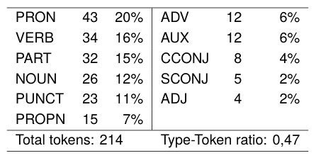
Jedwali la 1: Muhtasari wa lebo za UPOS zilizopewa katika sentensi 20 za Tswana.
Dhana muhimu wakati wa kuweka lebo za vitegemezi vya jumla ni uwepo wa aina za maneno (POS), haswa POS ya jumla (UPOS) (Petrov et al., 2012). Seti ya lebo za UPOS ina lebo 17: 6 kwa madarasa wazi (majina, vitenzi, n.k.), 8 kwa madarasa funge (k.m. viwakilishi, viunganishi) na 3 kwa vipengee mbalimbali (kama vile alama ya uakifishaji na alama).
Katika kazi ndogo sana iliyofanywa kuhusu Tswana, bado hakuna makubaliano kuhusu jinsi ya kupatanisha POS ya jadi ya Tswana katika UPOS na matumizi ya lebo za UPOS si mara zote ya moja kwa moja (Dione et al., 2023). Hata hivyo, kuna vitambulishi vya aina za maneno vya Tswana vyenye seti pana zaidi za vitambulisho (Eiselen na Puttkammer, 2014; Puttkammer na wenzake, 2018; Malema na wenzake, 2020; Dibitso na wenzake, 2022). Kwa madhumuni ya ufafanuzi wa UD wa Tswana, kigawaji maneno na kipa lebo cha POS cha NCHLT vilitumika kuweka lebo kwenye data kwa POS ya kina (kwa kawaida hujulikana kama XPOS katika UD). Kipa lebo hiki cha POS kinajumuisha lebo kuu 26, na lebo 188 wakati wa kujumuisha taarifa za ngeli. Tagi za POS za kina zilibadilishwa baadaye kuwa tagi za UPOS kwa kuzingatia jedwali la ubadilishaji. Jedwali la 1 linatoa muhtasari wa usambazaji wa tagi za UPOS zilizopewa katika data.
Hata kwa kazi inayoonekana kuwa rahisi ya kupunguza seti ya tagi za XPOS hadi UPOS, kulikuwa na maamuzi machache magumu wakati wa ubadilishaji, hasa kutopakia tagi moja mahususi ya UPOS (hasa PART chembe) kwa kategoria nyingi sana tofauti za XPOS.
Tatizo kuu lilihusu viambishi awali vya vitenzi katika Tswana. Kama ilivyotajwa awali, kutokana na mtindo wa uandishi wa kutenganisha, kategoria kadhaa za mofimu za vitenzi huandikwa kama maneno tofauti. Mofimu hizi pia hupewa tagi tofauti katika schema ya XPOS na zinajumuisha mofimu za upatanisho (mofimu za kiima na yambwa), mofimu za umiliki, mofimu za ukanushi, mofimu za kipengele, na mofimu za wakati. Mofimu za kiima na yambwa zilichukuliwa kama upatanisho wa kiima na yambwa mtawalia katika XPOS. Kwa kuwa hakuna vilinganishi vya moja kwa moja vinavyopatikana katika UPOS, viliwekewa tagi kama PRON (kiwakilishi), huku viambishi vimilikishi vikiwekewa tagi kama PART (chembe). Mofimu za wakati na hali (zilizopewa tagi MORPH katika XPOS) pia zilibadilishwa kuwa PART (chembe) katika UPOS, huku viashiria vya ukanushi vikibadilishwa kuwa ADV.
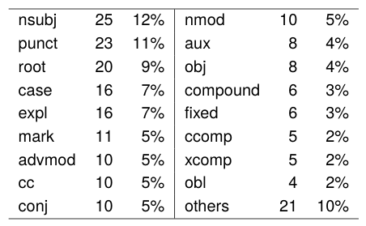
Jedwali la 2: Muhtasari wa mahusiano ya utegemezi yaliyowekwa katika sentensi 20 za Tswana.
Zaidi ya hayo, katika seti yetu ya kina ya tagi za XPOS, ideofoni zilipokea tagi yao wenyewe IDEO kwani zinachukuliwa kuwa tabaka tofauti la neno linaloelezea kitendo, namna au sifa kupitia uigaji wa sauti, lakini si mara zote huonyesha kazi sawa ya kisintaksia katika sentensi. Hata hivyo, hakuna tagi kama hiyo katika UPOS na hakuna ulinganifu katika familia nyingine za lugha katika katalogi ya UD uliopatikana. Kwa kuwa hakukuwa na ideofoni katika sentensi za Tswana Cairo CICLing, tagi haikuhitajika, lakini katika ufafanuzi zaidi tungezingatia tagi ya ADV (kielezi) kwa ideofoni katika Tswana.
Faida ya kuwa na tagi zote za XPOS na UPOS katika matumizi yetu wakati wa ufafanuzi wa kisintaksia ni kwamba tokeni zenye utata mkubwa (zenye homofonia na utata wa kimofosintaksia, k.m. ka 'na, juu ya, kupitia', go 'kitenzi cha unganishi katika hali mbalimbali, katika, kwa+kitenzi, kwa+eneo') zinaweza kuunganishwa kwa usahihi kwa urahisi zaidi na kwamba tagi zote za XPOS zilizowekwa kiotomatiki pamoja na tagi za UPOS zilizobadilishwa zinaweza kusahihishwa ikihitajika.
5. Mchakato wa Ufafanuzi
Ufafanuzi wa kisintaksia pamoja na masahihisho ya lebo za UPOS ulifanyika katika Arborator Grew (Guibon et al., 2020). Katika hatua ya kwanza, wafafanuzi walikagua lebo za UPOS na XPOS na kuzisahihisha pale ilipobidi. Kisha, muundo wa kisintaksia uliongezwa hatua kwa hatua: anza kwa kutambua mzizi wa kila sentensi, unganisha kiima na yambwa, kisha endelea kuunganisha na kuweka lebo kwenye vitegemezi vilivyobaki. Wakati wa ufafanuzi, chaguzi mbalimbali za miundo fulani ya kisintaksia zilijadiliwa na kuandikwa hadi wafafanuzi walipokubaliana juu ya uunganishaji unaopendelewa na lebo za vitegemezi zinazohusiana. Jedwali la 2 linaonyesha muhtasari wa mahusiano ya vitegemezi yaliyopewa.
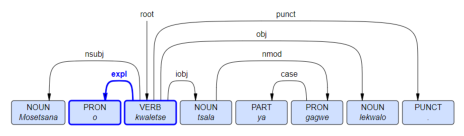
Kielelezo cha 1: Sentensi ya 1 yenye kiima dhahiri.

Kielelezo cha 2: Sentensi ya 2 yenye kiima fiche.
Treebank ya Tswana-Popapolelo itapatikana katika toleo lijalo la UD, pamoja na nyaraka zote za lugha maalum.
6. Masuala Yaliyojitokeza
Baadhi ya ufafanuzi yalikuwa ya moja kwa moja kwa seti ndogo ya data ya sasa, lakini sifa za kipekee za kiisimu za Tswana kama mfano wa lugha ya Kibantu iliyoandikwa kwa njia ya kutenganisha zilihitaji mijadala ya kina zaidi kuhusu jinsi ya kutumia mahusiano yaliyopo ya UD. Haya yamefafanuliwa hapa chini.
6.1. Tahajia ya Kutenganisha na Miundo ya Vitenzi katika Tswana
Kama ilivyoelezwa katika sehemu ya 2.1, mtindo wa uandishi wa kutenganisha umepitishwa kwa Tswana. Hasa kwa viambishi awali vya vitenzi, hii inamaanisha kwamba idadi kubwa ya tokeni za tahajia zinazotangulia kitenzi katika isimu ya kimapokeo zingeonekana zaidi kama mofimu badala ya maneno "sahihi". Utambuzi sahihi wa maneno kwa ujumla huchukuliwa kama hatua muhimu ya awali ya uchakataji kwa maelezo ya kisintaksia. Kwa mtazamo huu, viambishi awali vya vitenzi vya Tswana vilivyoandikwa kwa njia ya kutenganisha husababisha tokeni za tahajia ambazo ni sehemu ya maneno ya kiisimu (Taljard and Bosch, 2006) na hivyo kuhatarisha uadilifu wa kileksika wa vitenzi. Viambishi awali vya vitenzi vya Tswana hubeba taarifa za unyambulishaji huku viambishi tamati vikibeba taarifa za unyambulishaji na pia za uundaji wa maneno (Krüger, 2006, 268). Viambishi awali hivi vya vitenzi pia hubeba taarifa za kimofolojia na kisintaksia jambo ambalo hufanya iwe vigumu kuvipangia lebo za UPOS na mahusiano ya kisintaksia.
Suluhisho moja dhahiri la kushughulikia tatizo hili ni kurekebisha ugawaji wa maneno ili kuakisi maneno ya kiisimu, badala ya maneno ya kiothografia. Ingawa hili kwa hakika lingerahisisha na kuoanisha data kwa karibu zaidi na mfumo wa UD, hili pia lingepunguza uzito wa maelezo na taarifa za treebank. Kwa kuzingatia hili, tuliamua kufafanua mahusiano kati ya maneno yote ya kiothografia. Maelezo zaidi kuhusu athari za ugawaji wa maneno yametolewa katika sehemu ya 6.5.
Katika ufafanuzi wa UD wa Tswana, viambishi awali vya vitenzi vilivyoandikwa kwa njia ya kutenganisha vinaunganishwa na mzizi wa kitenzi kupitia matao. Sasa tutaeleza jinsi sehemu mbalimbali za miundo ya vitenzi zilivyoshughulikiwa.
6.1.1. Viambishi vya Upatanisho wa Kiima
Katika hali ambapo kiima dhahiri kinatambulika katika sentensi, kiambishi cha upatanisho wa kiima ni alama ya upatanisho inayoashiria uhusiano kati ya kiima dhahiri na kitenzi. Katika hali hizi tulichagua uhusiano wa expl. Uhusiano huu unatumika katika UD kwa matukio kama vile urudiaji wa klitiki (k.m. katika lugha za Kirumi) au urudiaji wa nomino ya kileksika na klitiki ya kiwakilishi (k.m. katika Kigiriki na Kibulgaria). Ingawa viambishi vya upatanisho wa kiima si sawa na klitiki, vina tabia sawa kwa kuwa ni aina ya nakala ya "kiwakilishi" isiyo na dhima yake ya semantiki. Mfano wa Kitswana unaweza kuonekana katika kielelezo cha 1 cha sentensi ya 1.
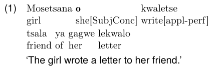
Katika matukio ambapo kiima dhahiri hakitambuliki, upatanisho wa kiima (fichu) hupata hadhi ya kiwakilishi (kama ambavyo kingekuwa kiwakilishi katika tafsiri) na kuwa kiima halisi, hivyo basi huwekwa alama kwa uhusiano wa nsubj kama inavyoonyeshwa katika kielelezo cha 2 cha sentensi ya 2.
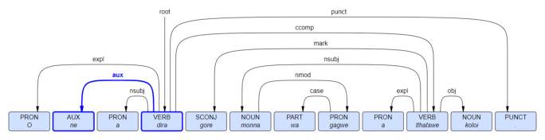
Kielelezo cha 3: Sentensi ya 3 inayoonyesha matumizi ya uhusiano wa aux.
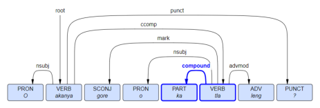
Kielelezo cha 4: Sentensi ya 4 inayoonyesha matumizi ya uhusiano wa compound kwa baadhi ya mofimu za TAME.
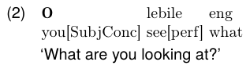
6.1.2. Vitenzi Vya Msaada
Kitenzi kisaidizi huboresha maana ya kitenzi kikuu kinachokamilishana nacho, kitenzi cha ushirikishi au kishazi kingine cha kitenzi kisaidizi na kinaweza kuongeza taarifa za kisemantiki kuhusu hali, wakati, kipengele na/au ukanushi wa kitenzi. Pia huongeza taarifa kuhusu kuendelea au kukamilika kwa tendo: Huonyesha aina fulani ya muda wa tendo au huonyesha wakati wa kimantiki ambao tendo hilo linatekelezwa. Kwa mfano, kitenzi kisaidizi ne huonyesha wakati uliopita unaoonyesha kwamba tendo lilikuwa linafanyika au lilikuwa limefanyika wakati fulani katika siku za nyuma. Ikiwa kitenzi kinachokamilishana nacho kiko katika wakati uliopo basi huonyesha tendo ambalo halijakamilika na linaendelea wakati fulani huko nyuma. Ikiwa kitenzi kinachojaza kiko katika kamili huonyesha kuwa kitendo kimekamilika katika hatua ya marejeleo (Pretorius, 1997; Krüger, 2013a).
Katika UD, vitenzi visaidizi ni kundi funge ambalo haliwezi kuwa na vitegemezi vyovyote. Uhusiano wa aux unatumika katika Tswana kuonyesha uhusiano kati ya kitenzi na kitenzi kisaidizi kinachotangulia, kama ilivyo kwa lugha nyingine. Hata hivyo, tulikumbana na suala la visaidizi kuchukua upatanisho wa kiima (uliorudiwa) kama kitegemezi. Katika sentensi ya 3, upatanisho wa kiima hutokea mara mbili: mara moja (ukidhihirika kama o) pamoja na kisaidizi ne na mara moja (ukidhihirika kama a) pamoja na kitenzi dira, lakini vyote vikirejelea kiima 'yeye' na vyote vinahitajika ili sentensi iwe sahihi kisarufi.
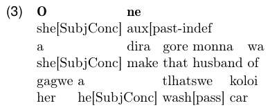
'Alimfanya mumewe kuosha gari. '
Katika hatua hii, tumechagua kufafanua upatanisho wa kiima pamoja na kitenzi kisaidizi kwa uhusiano wa expl, wakati upatanisho wa kiima pamoja na kitenzi kikuu unakuwa nsubj na uhusiano kati ya kisaidizi na kitenzi kikuu umewekwa alama ya aux kama inavyoonekana katika kielelezo cha 3.
6.1.3. Mofimu za TAME
Mofimu za wakati-kipengele-hali-ushahidi (TAME) zilizoandikwa kwa njia ya kutenganisha katika muundo wa kimofolojia wa kitenzi daima hutokea katika mpangilio maalum na hazibadiliki kimofosintaksia. Kwa mofimu za TAME zikiwemo mofimu ya wakati uliopo a, mofimu ya kuendelea sa 'bado', mofimu ya uwezekano ka 'weza, huenda' na mofimu ya wakati ujao tla 'ta-, -taka-' uhusiano wa compound unatumika kueleza kwamba huu ni mchanganyiko wa leksimu ambazo kimofosintaksia hufanya kazi kama neno moja. Tazama mfano katika sentensi 4 na kielelezo 4.
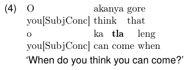
Kwa morphemes ga, sa, se, tumechagua kutumia mchanganyiko wa ADV na advmod, unaofanana na Kiingereza, kama ionyeshwavyo katika sentensi 5 na tarakimu 5.

Kielelezo 5: Sentensi 5 inayoonyesha matumizi ya uhusiano wa advmod kwa mofimu za TAME za ukanushi.

Picha 6: Sentensi 6 yenye kitenzi cha kueleza kinachotumika kama kitenzi cha kuunganisha.

6.2. Vitenzi vya Kopula
Kopula ni uhusiano wa neno la kazi linalotumiwa kuunganisha kiima na kiarifu kisicho cha kitenzi. Katika Tswana aina tatu za vitenzi vya kopula vinatofautishwa:
- kopula ya kutambulisha: inatambulisha kiima kuhusiana na aina, hadhi au taaluma au kutabiri kuwepo au uwepo wa kitu, k.m. Lekwalo lê ke la gago 'Barua hii ni yako';
- kopula ya kuelezea: inathibitisha ubora fulani, sifa au hali ya kiima, au hali yake au eneo lake, k.m. Ditlhako tsa me di dintšha 'Viatu vyangu ni vipya';
- kopula ya ushirikisho: inaelezea wazo la Kiingereza have au be with na inaonyesha umiliki au ushirikisho, k.m. Sediba sê se na le metsi 'Kisima hiki kina maji' .
Muundo wa kimofolojia wa vitenzi hivi unaweza kujumuisha taarifa za wakati, kipengele, hali na ukanushi.
Wakati kitenzi katika Tswana ni kitenzi cha kopula cha kutambulisha au kuelezea, mzizi wa kishazi ni kikamilisho cha kitenzi cha kopula. Aina hizi mbili za vitenzi vya kopula zinawekewa tagi ya POS kama AUX, na uhusiano wa cop unatumiwa kati ya mzizi na kitenzi cha kopula kinachotangulia. Tazama sentensi ya 6 na kielelezo cha 6 kwa mfano wa kikopulati kinachoeleza.

'Baba yangu ni mzuri zaidi kuliko baba yako.'
Kwa upande wa kitenzi kikopulati cha ushirikisho, mzizi wa kishazi ni kitenzi kikopulati. Vitenzi vikopulati vya ushirikisho katika Tswana vimewekewa tagi ya POS kama VERB, na uhusiano wa obj unatumika kati ya mzizi na kikamilisho kinachofuata, kama inavyoonyeshwa katika sentensi ya 7 na kielelezo cha 7. Uchanganuzi huu unatofautiana na maelezo ya kimapokeo ya isimu ya Tswana (Cole, 1955; Krüger, 2006, 2013b).

6.3. Matumizi ya Uhusiano wa mark
Viunganishi vinavyoashiria sentensi kuwa chini ya sentensi nyingine hufasiliwa kama mark katika UD. Katika Tswana, alama ni mwanachama wa kuanzisha wa sentensi ambayo inajumuisha kitendo katika hali ya subjunctive au participial. Kwa subjunctive, kiunganishi gore 'that, so that' kinatumika, kama inavyoonyeshwa katika sentensi 8 na kielelezo 8. Kwa participial, kiunganishi kama vile fa 'as, while, when, if' , le fa 'even if, although, while' na ka 'since' vinatumika.
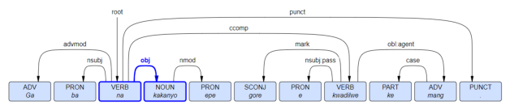
Kielelezo 7: Sentensi 7 yenye kitenzi cha kopula cha ushirikisho.

Picha 8: Sentensi 8 inayoonyesha matumizi ya uhusiano wa alama kwa sentensi ya chini.

Uhusiano wa mark pia unatumika katika Tswana kwa vitenzi vya infinitive, sawa na Kiingereza na Kijerumani, kwa mfano go tlogela 'to stop' ambapo kialamishi ni go 'to' . Angalia sentensi 9 na picha 9 kwa maelezo.

Zaidi ya hayo, alama hutumika katika kishazi rejeshi ambapo chembe sifishi ndiyo kialama kama inavyoonekana katika sentensi 10 na kielelezo 10: Chembe sifishi sikuzote hupatana na ngeli maalum ya nomino katika Tswana, kwa mfano katika e kgolo '[sehemu] kubwa' kialama ni chembe sifishi e inayoonyesha upatano wa ngeli ya 9.
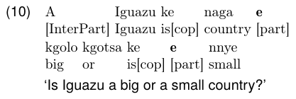
6.4. Chembe ya Kuuliza a
Katika Tswana kuna chembe ya kuuliza a inayoongezwa mwanzoni mwa sentensi kubadilisha sentensi elezi kuwa ya kuuliza. Baada ya mashauriano na jumuiya ya UD, tumeamua kukabidhi lebo ya UPOS PART (chembe) kwa a na pia kuiunganisha moja kwa moja kwenye mzizi wa sentensi kwa uhusiano wa mazungumzo (kufuata mfano wa Kilatini wa ne). Kwa vile chembe hii hufanya kazi katika kiwango cha kipragmatiki zaidi, uhusiano wa mazungumzo 'unatumika kwa vihisishi na chembe nyingine za mazungumzo na vipengele (ambavyo havijaunganishwa wazi kwenye muundo wa sentensi, isipokuwa kwa njia ya kujieleza)' kama ilivyoelezwa katika muhtasari wa UD wa mahusiano ulionekana kuwa chaguo bora zaidi. Sentensi 11 na kielelezo 11 vinaonyesha mfano wa hili kwa Tswana.

6.5. Ugawaji wa maneno katika Tswana
Suala ambalo kwa hakika bado hatujalitatua na ambalo linahusiana na sehemu iliyotangulia ya 6.1 ni ugawaji wa Tswana katika vipashio. Kijadi, uchanganuzi wa kikompyuta kwa Lugha za Kibantu za Afrika Kusini zinazoandikwa kwa mtengano, yaani Kisotho cha Kaskazini, Kisotho cha Kusini, Tswana, Kivenḓa na Kitsonga, umekuwa ukifanywa kwenye maneno ya kiothografia kwani wakati huo hakuna ubadilishaji unaohitajika kutoka kwa maandishi asilia. Athari za kuchagua kutumia maneno ya kiothografia badala ya maneno ya kiisimu, hata hivyo, zitahisika katika viwango mbalimbali wakati wa kufanyia kazi uchanganuzi wa kisintaksia wa Tswana kwa kutumia vitegemezi vya UD:
- Wakati wa kufanya ufafanuzi: Kufanya kazi kwenye neno la kiothografia inamaanisha muda na juhudi zaidi zitatumika katika kupata UPOS na pia mahusiano ya vitegemezi kwa usahihi (vyote vinahusu zaidi kiwango cha kisintaksia). Kwa maneno ya kiisimu, muundo wa kisintaksia unakuwa wa moja kwa moja zaidi (rahisi zaidi?), lakini wakati huo huo uangalifu zaidi unahitajika katika kuongeza taarifa za kimofolojia ili kuhifadhi undani unaohitajika ili kuweza kubainisha.

Kielelezo 9: Sentensi 9 inayoonyesha matumizi ya uhusiano wa alama katika vitenzi vya infinitive.

Kielelezo 10: Sentensi 10 inayoonyesha matumizi ya uhusiano wa alama kwa chembe sifishi.
- Kutoka kwa mtazamo wa isimu ya kikompyuta: Hasa katika mfumo wa UD, ikiwa maandishi ya Tswana yanachanganuliwa kwa kutumia maneno ya kiothografia, ufafanuzi unaotokana unaifanya ilingane kwa moja kwa moja zaidi na lugha za Ulaya na ufafanuzi wa kisintaksia utakuwa tofauti zaidi na wenye taarifa zaidi. Kwa upande mwingine, kutumia maneno ya lugha kutaweka msisitizo zaidi juu ya kufanana na lugha nyingine, hasa lugha za Kibantu zilizoandikwa kiunganishi, lakini muundo wa kisarufi utakuwa rahisi zaidi kwa sababu habari nyingi zitapatikana tu katika ngazi ya mofolojia (chini ya neno).
- Kuhusiana na uchanganuzi wa kiisimu: Katika maelezo ya jadi (ya kimuundo) ya kisarufi, mpaka wa upande wa kushoto wa vitenzi vya Tswana unachukuliwa kuwa kiambishi awali cha kwanza cha kitenzi hicho, hata kama kimeandikwa kwa kutenganisha. Hii ina maana kwamba vitenzi kama vile ke a mo rata katika 2.1 vingegawanywa kama neno moja, yaani kitenzi. Kitenzi hiki kingeunda sentensi yenyewe na kingekuwa kiarifu cha sentensi. Kwa hiyo uchanganuzi wa kisintaksia wa sentensi haungeonyesha thamani ya kiwakilishi ya viambishi upatanishi vya kiima na yambwa ili kuonyesha kwamba sentensi ina kiima na yambwa (Taljard and Bosch, 2006; Louwrens and Poulos, 2006; Krüger, 2006; Cole, 1955; Pretorius et al., 2015). Katika maelezo ya baadaye (Berg, 2018), uadilifu wa kileksika wa kitenzi unadumishwa lakini hadhi ya kihoja ya viambishi upatanishi hivi inaonyeshwa katika kiwango cha kikazi.
Kwa hiyo, ikiwa tungeamua "kuambatisha" viambishi awali vya kitenzi kwenye kitenzi, muundo wa awali katika 12 unaotegemea maneno ya kiothografia ungebadilika kuwa uwakilishi katika 13.
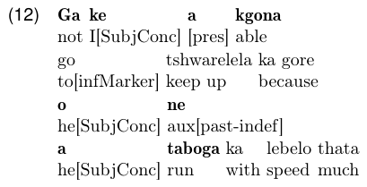

"Sikuweza kusimama, kwa sababu alikimbia haraka sana. '
Tunahisi kazi zaidi inahitajika kuchunguza wapi pa kuweka mipaka wakati wa "kuambatisha" viambishi awali vya vitenzi na pia kuelewa kikamilifu matokeo ya mkabala kama huo.
7. Hitimisho na Kazi za Baadaye
Makala hii ina maelezo ya treebank ya kwanza ya UD inayopatikana kwa umma kwa Tswana, kulingana na sentensi 20 za Cairo CICLing zilizotafsiriwa. Treebank iliyopatikana inaonyesha kwamba hili lilikuwa jaribio la kwanza lenye mafanikio la kutumia UD kwa lugha ya Kibantu na linaunda msingi wa ufafanuzi zaidi wa Tswana kwa seti pana zaidi. Faida kuu ya kuanza na seti ndogo ya data kama hii ni kwamba maelezo mengi yenye matatizo zaidi yanaweza kujadiliwa kwa kina, na matokeo yanayolingana yanaweza kuandikwa bila kuhitaji ufafanuzi mpya mkubwa wa data katika hatua ya baadaye. Kama inavyotarajiwa, si masuala yote yametatuliwa bado na baadhi ya maamuzi yalipaswa kufanywa kuhusu jinsi bora ya kutumia mfumo uliopo kwa lugha mpya yenye sifa za kipekee za kiisimu. Tunatumai ripoti ya kina kuhusu masuala yaliyojitokeza itawasaidia pia wengine wanapofafanua Lugha mpya za Kisotho na Kibantu katika UD.

Kielelezo 11: Sentensi 11 yenye chembe ya kuuliza.
Kwa kuwa treebank ya Tswana-Popapolelo sasa inapatikana, tunapanga kuandika data ya ziada kwa msaada wa wasaidizi wa wanafunzi. Ufafanuzi wa sasa unategemea uelewa wetu wa fasihi na maoni tuliyopokea kutoka kwa jumuiya ya UD, lakini chaguzi zilizofanywa hadi sasa hakika zitaboreshwa zaidi na data iliyofafanuliwa inayopatikana kwa Tswana itapanuliwa kwa kuiongeza kwenye Tswana-Popapolelo. Hii inajumuisha kufanya majaribio na mikakati tofauti ya ugawaji wa maneno kwa data ileile ili kuchunguza athari kwenye uchanganuzi wa utegemezi.
Mara seti kubwa zaidi ya data ya treebank inapopatikana, tutafunza pia vichanganuzi otomatiki ili kufafanua data mapema kusaidia na kurahisisha mchakato wa ufafanuzi. Hatimaye tunalenga kuwa na data ya kutosha kufunza vichanganuzi kamili vya utegemezi sahihi, vikiwemo XPOS, UPOS, lemma na vitambulishi vya mofolojia, wakati huo huo tukitumia kazi za wengine wanaotumia treebank za UD kufunza zana mbalimbali za NLP.
8. Shukrani
Tungependa kuwashukuru Kevin Mavalela na Kaboentle Maibi kwa mchango wao katika tafsiri na majadiliano ya awali na ufafanuzi. Zaidi ya hayo, tunashukuru kwa jumuiya ya UD kwa majibu yao kwa maswali yetu.
Maelezo
1 Tutakuwa tukitumia Tswana kwani hili ndilo neno linalopendelewa katika mazingira ya kimataifa badala ya Setswana ambalo kwa ujumla hutumika Afrika Kusini (kama ilivyoainishwa katika Katiba ya Afrika Kusini ya 1996 na Sheria ya Matumizi ya Lugha Rasmi ya 12 ya 2012). Uamuzi huohuo wa kutotumia viambishi unahusu majina ya lugha nyingine rasmi za Afrika Kusini katika makala hii.
2 https://universaldependencies.org/introduction.html, retrieved 12-02-2024.
3 Angalia https://universaldependencies.org/ kwa muhtasari.
4 https://github.com/UniversalDependencies/cairo/blob/master/translations.txt
5 Hawa walikuwa wanafunzi wa uzamili waliolipwa kwa muda wao.
6 Kitswana kimejumuishwa katika UDMorph Tagger https://lindat.mff.cuni.cz/services/teitok-live/udmorph/index.php?action=tag, lakini ubadilishaji kutoka kitambulisho cha POS hadi UPOS haujathibitishwa na wataalamu wa lugha (bado).
7 https://arboratorgrew.elizia.net/
8 https://github.com/UniversalDependencies/UD_Tswana-Popapolelo
9 Picha zote zilitengenezwa kwa kutumia http://www.let.rug.nl/kleiweg/conllu/.
10 Maana ya kitenzi cha msaada ne inahitaji umbo la mfululizo la mofimu ya makubaliano ya nomino inayofuata.
11 https://universaldependencies.org/u/dep/all.html#al-u-dep/discourse.
9. Marejeo
Ekaterina Aplonova and Francis M. Tyers. 2017. Towards a dependency-annotated treebank for Bambara. In Proceedings of the 16th International Workshop on Treebanks and Linguistic Theories, pages 138-145, Prague, Czech Republic.
Ansu Berg. 2018. A computational syntactic analysis of Setswana. Ph.D. thesis, North-West University, Potchefstroom, South Africa.
Desmond T. Cole. 1955. An introduction to Tswana grammar. Longman, Cape Town.
Marie-Catherine de Marneffe, Christopher D. Manning, Joakim Nivre, and Daniel Zeman. 2021. Universal Dependencies. Computational Linguistics, 47(2):255-308.
Mary Dibitso, Pius A. Owolawi, and Sunday O. Ojo. 2022. An hybrid part of speech tagger for Setswana language using a voting method. In International Conference on Intelligent and Innovative Computing Applications, pages 245-253.
Cheikh M. Bamba Dione. 2021. Multilingual dependency parsing for low-resource African languages: Case studies on Bambara, Wolof, and Yoruba. In Proceedings of the 17th International Conference on Parsing Technologies and the IWPT 2021 Shared Task on Parsing into Enhanced Universal Dependencies (IWPT 2021), pages 84-92, Online. Association for Computational Linguistics.
Cheikh M. Bamba Dione, David Ifeoluwa Adelani, Peter Nabende, Jesujoba O. Alabi, Thapelo Sindane, Happy Buzaaba, Shamsuddeen Hassan Muhammad, Chris Chinenye Emezue, Perez Ogayo, Anuoluwapo Aremu, Catherine Gitau, Derguene Mbaye, Jonathan Mukiibi, Blessing Sibanda, Bonaventure F. P. Dossou, Andiswa Bukula, Rooweither Mabuya, Allahsera Auguste Tapo, Edwin Munkoh-Buabeng, Victoire Memdjokam Koagne, Fatoumata Ouoba Kabore, Amelia Taylor, Godson Kalipe, Tebogo Macucwa, Vukosi Marivate, Tajuddeen Gwadabe, Mboning Tchiaze Elvis, Ikechukwu Onyenwe, Gratien Atindogbe, Tolulope Adelani, Idris Akinade, Olanrewaju Samuel, Marien Nahimana, Théogène Musabeyezu, Emile Niyomutabazi, Ester Chimhenga, Kudzai Gotosa, Patrick Mizha, Apelete Agbolo, Seydou Traore, Chinedu Uchechukwu, Aliyu Yusuf, Muhammad Abdullahi, and Dietrich Klakow. 2023. MasakhaPOS: Part-of-speech tagging for typologically diverse African languages. In Proceedings of the 61st Annual Meeting of the Association for Computational Linguistics Volume 1: Long Papers, pages 10883-10900.
Roald Eiselen and Martin J. Puttkammer. 2014. Developing text resources for ten South African languages. In Proceedings of the Ninth International Conference on Language Resources and Evaluation (LREC 2014), pages 3698-3703.
Gaël Guibon, Marine Courtin, Kim Gerdes, and Bruno Guillaume. 2020. When collaborative treebank curation meets graph grammars. In Proceedings of the 12th Language Resources and Evaluation Conference, pages 5291-5300, Marseille, France. European Language Resources Association.
Pratik Joshi, Sebastin Santy, Amar Budhiraja, Kalika Bali, and Monojit Choudhury. 2020. The state and fate of linguistic diversity and inclusion in the NLP world. In Proceedings of the 58th Annual Meeting of the Association for Computational Linguistics, pages 6282-6293, Online. Association for Computational Linguistics.
Sylvain Kahane, Martine Vanhove, Rayan Ziane, and Bruno Guillaume. 2021. A morph-based and a word-based treebank for Beja. In Proceedings of the 20th International Workshop on Treebanks and Linguistic Theories (TLT, SyntaxFest 2021), pages 48-60, Sofia, Bulgaria. Association for Computational Linguistics.
Francis Katamba. 1993. Morphology. Springer, New York.
Francis Katamba. 2003. Bantu nominal morphology. In Derek Nurse and Gérard Philippson, editors, The Bantu Languages, pages 103-120. Routledge, London & New York.
Caspar J.H. Krüger. 2006. Introduction to the morphology of Setswana. Lincom Europe, München.
Caspar J.H. Krüger. 2013a. Setswana syntax: a survey of word group structures: Volume 1. Lincom Europe, München.
Caspar J.H. Krüger. 2013b. Setswana syntax: a survey of word group structures: Volume 2. Lincom Europe, München.
Louis J. Louwrens and George Poulos. 2006. The status of the word in selected conventional writing systems - the case of disjunctive writing. Southern African Linguistics and Applied Language Studies, 24(3):389-401.
Jouni Maho. 2003. A classification of the Bantu languages: an update of Guthrie's referential system. In Derek Nurse and Gérard Philippson, editors, The Bantu Languages, pages 639-651. Routledge, London & New York.
Gabofetswe Malema, Boago Okgetheng, Bopaki Tebalo, Moffat Motlhanka, and Goaletsa Rammidi. 2020. Complex Setswana parts of speech tagging. In Proceedings of the first workshop on Resources for African Indigenous Languages (RAIL), pages 21-24.
Joakim Nivre, Marie-Catherine de Marneffe, Filip Ginter, Jan Hajič, Christopher D. Manning, Sampo Pyysalo, Sebastian Schuster, Francis Tyers, and Daniel Zeman. 2020. Universal Dependencies v2: An evergrowing multilingual treebank collection. In Proceedings of the 12th Language Resources and Evaluation Conference, pages 4034-4043, Marseille, France. European Language Resources Association.
Slav Petrov, Dipanjan Das, and Ryan McDonald. 2012. A universal part-of-speech tagset. In Proceedings of the Eighth International Conference on Language Resources and Evaluation (LREC'12), pages 2089-2096, Istanbul, Turkey. European Language Resources Association (ELRA).
Laurette Pretorius, Biffie Viljoen, Ansu Berg, and Rigardt Pretorius. 2015. Tswana finite state tokenisation. Language Resources and Evaluation, 49(4):831-856.
Rigardt Pretorius. 1997. Auxiliary Verbs as a Subcategory of the Verb in Tswana. Ph.D. thesis, PU for CHE, Potchefstroom, South Africa.
Martin Puttkammer, Roald Eiselen, Justin Hocking, and Frederik Koen. 2018. NLP web services for resource-scarce languages. In Proceedings of ACL 2018, System Demonstrations, pages 43-49, Melbourne, Australia. Association for Computational Linguistics.
Department of Statistics South Africa. 2023. Census 2022: Statistical release. Technical report, Department of Statistics, Republic of South Africa.
Elsabé Taljard and Sonja E. Bosch. 2006. A comparison of approaches to word classtagging: Disjunctively vs. conjunctively written Bantu languages. Nordic Journal of African Studies, 15(4):428-442.
Mark van der Velde, Koen Bostoen, Derek Nurse, and Gérard Philippson, editors. 2022. The Bantu Languages, 2nd edition. Routledge, London & New York.
Daniel Zeman. 2008. Reusable tagset conversion using tagset drivers. In Proceedings of the Sixth International Conference on Language Resources and Evaluation (LREC'08), Marrakech, Morocco. European Language Resources Association (ELRA).
10. Marejeo ya Rasilimali za Lugha
LR Berg, Ansu. 2018. Setswana Test suite and Treebank. South African Centre for Digital Language Resources (SADiLaR). PID https://hdl.handle.net/20.500.12185/478.
English na Kiswahili
The First Universal Dependency Treebank for Tswana: Tswana-Popapolelo
Treebank ya Kwanza ya Utegemezi wa Universal kwa Tswana: Tswana-Popapolelo
Affiliations
Tanja Gaustad†, Ansu Berg‡, Rigardt Pretorius‡, Roald Eiselen†
†Centre for Text Technology (CTexT), ‡Setswana
North-West University, Potchefstroom, South Africa
Taasisi
Tanja Gaustad†, Ansu Berg‡, Rigardt Pretorius‡, Roald Eiselen†
†Centre for Text Technology (CTexT), ‡Setswana
North-West University, Potchefstroom, South Africa
Abstract
Muhtasari
This paper presents the first publicly available UD treebank for Tswana, Tswana-Popapolelo. The data used consists of the 20 Cairo CICLing sentences translated to Tswana. After preprocessing these sentences with detailed POS (XPOS) and converting them to universal POS (UPOS), we proceeded to annotate the data with dependency relations, documenting decisions for the language specific constructions. Linguistic issues encountered are described in detail as this is the first application of the UD framework to produce a dependency treebank for the Bantu language family in general and for Tswana specifically.
Makala hii inawasilisha treebank ya kwanza ya UD inayopatikana kwa umma kwa Tswana, Tswana-Popapolelo. Data iliyotumika inajumuisha sentensi 20 za Cairo CICLing zilizotafsiriwa kwa Tswana. Baada ya kuchakata sentensi hizi kwa POS ya kina (XPOS) na kuzibadilisha kuwa POS ya kijumla (UPOS), tuliendelea kufafanua data kwa mahusiano ya utegemezi, tukirekodi maamuzi kwa miundo mahususi ya lugha. Masuala ya kilugha yaliyojitokeza yameelezewa kwa kina kwa kuwa hii ni matumizi ya kwanza ya mfumo wa UD kutoa treebank ya utegemezi kwa familia ya lugha ya Kibantu kwa ujumla na kwa Tswana hasa.
Keywords
Maneno Muhimu
Dependency treebank, annotation, Bantu languages, Tswana
Treebank ya utegemezi, ufafanuzi, Lugha za Kibantu, Tswana
1. Introduction
1. Utangulizi
Along with a recent push to broaden the linguistic diversity in Natural Language Processing (NLP) research (Joshi et al., 2020), there has been an increased interest in syntactic annotations for underresourced languages from Sub-Saharan Africa resulting in treebanks for Bambara (Aplonova and Tyers, 2017; Dione, 2021), Beja (Kahane et al., 2021), Wolof, and Yoruba (Dione, 2021). The only such resource currently available for Tswana is a treebank based on Lexical Functional Grammar (Berg, 2018) consisting of phrases and simple sentences (LR Berg, 2018).
Pamoja na msukumo wa hivi karibuni wa kupanua utofauti wa kilugha katika utafiti wa Uchakataji wa Lugha Asilia (NLP) (Joshi et al., 2020), kumekuwa na ongezeko la hamu katika ufafanuzi wa kisintaksia kwa lugha zenye rasilimali chache kutoka Afrika Kusini mwa Jangwa la Sahara na kusababisha treebank kwa Kibambara (Aplonova na Tyers, 2017; Dione, 2021), Kibeja (Kahane et al., 2021), Kiwolofu, na Kiyoruba (Dione, 2021). Rasilimali pekee kama hiyo inayopatikana kwa sasa kwa Tswana ni treebank inayotegemea Sarufi ya Kiutendaji ya Kileksika (Berg, 2018) inayojumuisha vishazi na sentensi rahisi (LR Berg, 2018).
This paper describes the first publicly available Tswana treebank Tswana-Popapolelo annotated in the Universal Dependency (UD) framework (de Marneffe et al., 2021). As a proof of concept, we chose to annotate a small data set in UD as well as document linguistic annotation issues and decisions when applying UD to Tswana so that going forward more data can be annotated more easily.
Makala haya yanaelezea treebank ya kwanza ya Tswana inayopatikana kwa umma, Tswana-Popapolelo, iliyofafanuliwa katika mfumo wa Universal Dependency (UD) (de Marneffe et al., 2021). Kama uthibitisho wa dhana, tulichagua kufafanua seti ndogo ya data katika UD na pia kuandika masuala na maamuzi ya ufafanuzi wa kiisimu wakati wa kutumia UD kwa Tswana ili kwenda mbele data zaidi iweze kufafanuliwa kwa urahisi zaidi.
In this paper, we will focus on the building of a UD treebank for Tswana (see section 2 for the necessary background information), describing the data (section 3) and preprocessing (section 4), the annotation process (section 5) and, most importantly, issues we encountered (section 6) when trying to apply the UD framework to a novel language (family).
Katika makala hii, tutalenga kwenye ujenzi wa treebank ya UD kwa Tswana (angalia sehemu 2 kwa maelezo ya msingi yanayohitajika), tukielezea data (sehemu 3) na usindikaji wa awali (sehemu 4), mchakato wa ufafanuzi (sehemu 5) na, zaidi ya yote, changamoto tulizokutana nazo (sehemu 6) wakati wa kujaribu kutumia mfumo wa UD kwa lugha (familia) mpya.
2. Background
2. Usuli
2.1. Linguistic Background
2.1. Historia ya Lugha
Tswana (ISO-639-3 tsn) is a Bantu language spoken in the north western parts of South Africa, the eastern parts of Namibia which border on Botswana and in Botswana, where it is the national language and most of the people are first language speakers. It is one of the 12 official languages of South Africa and is spoken by 8,3% of the population (Statistics South Africa, 2023), making it the 6th most frequent home language. Next to sign language and two Germanic languages (Afrikaans and English), the official languages comprise nine Bantu languages: Four Nguni languages (Ndebele, Xhosa, Zulu, and Swati), three Sotho languages (Northern Sotho, Southern Sotho, Tswana), as well as Venḓa, and Tsonga. Tswana is classified in the South-Eastern Zone of Bantu languages. These Bantu languages are divided in language groups and Tswana is included in the Sotho language group (group S31) (Maho, 2003).
Tswana (ISO-639-3 tsn) ni lugha ya Kibantu inayozungumzwa katika sehemu za kaskazini magharibi mwa Afrika Kusini, sehemu za mashariki mwa Namibia zinazopakana na Botswana na nchini Botswana, ambako ni lugha ya taifa na watu wengi ni wazungumzaji wa lugha ya kwanza. Ni mojawapo ya lugha rasmi 12 za Afrika Kusini na inazungumzwa na asilimia 8.3 ya idadi ya watu (Statistics South Africa, 2023), na kuifanya kuwa lugha ya nyumbani ya 6 kwa wingi. Mbali na lugha ya ishara na lugha mbili za Kigermanik (Afrikaans na Kiingereza), lugha rasmi zinajumuisha lugha tisa za Kibantu: lugha nne za Nguni (Ndebele, Xhosa, Zulu na Swati), lugha tatu za Sotho (Sotho ya Kaskazini, Sotho ya Kusini, Tswana), pamoja na Venḓa na Tsonga. Tswana imeainishwa katika Kanda ya Kusini-Mashariki ya Lugha za Kibantu. Lugha hizi za Kibantu zimegawanywa katika vikundi vya lugha na Tswana imejumuishwa katika kikundi cha lugha ya Kisotho (kikundi S31) (Maho, 2003).
Bantu languages have a number of linguistic characteristics that make them substantially different from most Indo-European languages (van der Velde et al., 2022): all of them are tone languages; they use an elaborate system of noun classes (Katamba, 2003) and their nominal and verbal morphology is highly agglutinative and very productive (Katamba, 1993). Especially the last two characteristics are important in the context of syntactic annotation.
Lugha za Kibantu zina idadi ya sifa za kiisimu zinazozifanya ziwe tofauti kwa kiasi kikubwa na lugha nyingi za Kihindi-Kiulaya (van der Velde et al., 2022): zote ni lugha za toni; zinatumia mfumo tata wa ngeli (Katamba, 2003) na mofolojia yao ya nomino na vitenzi ina uambatizi wa hali ya juu na ni yenye tija sana (Katamba, 1993). Hasa sifa mbili za mwisho ni muhimu katika muktadha wa ufafanuzi wa kisintaksia.
The selection of the orthographic writing style adopted for Tswana was influenced by historical and phonological reasons (Taljard and Bosch, 2006, 433). Phonologically, the strong homographic character of the verbal prefixes of the Sotho languages (including Tswana) has led to the adoption of a disjunctive orthography regarding verbal prefixes. Nguni languages, on the other hand, have adopted a conjunctive writing system (Louwrens and Poulos, 2006). In this context, a distinction is made between linguistic words and orthographic words. For languages like English or Afrikaans, a linguistic word and an orthographic word largely coincide. For the conjunctively written languages, one orthographic word corresponds to one or more linguistic words. For disjunctively written languages like Tswana, however, several orthographic words can correspond to one linguistic word. The following example illustrates the disjunctive (Tswana) versus conjunctive (Zulu) writing styles:
Uteuzi wa mtindo wa uandishi wa tahajia uliopitishwa kwa Tswana uliathiriwa na sababu za kihistoria na kifonolojia (Taljard and Bosch, 2006, 433). Kifonolojia, tabia ya nguvu ya homografia ya viambishi awali vya vitenzi vya lugha za Kisotho (ikiwemo Tswana) imesababisha kupitishwa kwa tahajia ya kitenganishi kuhusu viambishi awali vya vitenzi. Lugha za Kinguni, kwa upande mwingine, zimepitisha mfumo wa uandishi wa kiunganishi (Louwrens and Poulos, 2006). Katika muktadha huu, tofauti inafanywa kati ya maneno ya kiisimu na maneno ya kiothografia. Kwa lugha kama Kiingereza au Kiafrikana, neno la kiisimu na neno la kiothografia kwa kiasi kikubwa vinapatana. Kwa lugha zilizoandikwa kwa muungano, neno moja la kiothografia linalingana na neno moja au zaidi ya kiisimu. Kwa lugha zilizoandikwa kwa utengano kama Tswana, hata hivyo, maneno kadhaa ya kiothografia yanaweza kulingana na neno moja la kiisimu. Mfano ufuatao unaonyesha mitindo ya uandishi ya utengano (Tswana) dhidi ya muungano (Zulu):
The implications of the disjunctively written verbal prefixes in the syntactic description of Tswana will be discussed in more detail in section 6.
Athari za viambishi awali vya vitenzi vilivyoandikwa kwa utengano katika maelezo ya kisintaksia ya Tswana zitajadiliwa kwa undani zaidi katika sehemu ya 6.
2.2. Universal Dependencies (UD)
2.2. Universal Dependencies (UD)
Universal dependencies (UD) is an international, collaborative project with two main aims: to develop a common framework describing the grammatical structure of the world's languages (de Marneffe et al., 2021) and to create treebanks for various languages applying this framework (Nivre et al., 2020). The project strives to produce cross-linguistically consistent treebanks (with language-specific extensions where necessary) describing syntactic structures as well as morphological features. This framework allows for comparisons between languages (including languages with free word order), research from a language typology perspective as well as the development of multilingual parsers. As stated in the introduction to the UD project: "The annotation scheme is based on an evolution of (universal) Stanford dependencies (de Marneffe et al., 2021), Google universal part-of-speech tags (Petrov et al., 2012), and the Interset interlingua for morphosyntactic tag sets (Zeman, 2008). " The syntactic relations in UD are represented as dependency trees rather than phrase structure trees which makes the annotated data easier to use and interpret in downstream tasks. Currently, there are over 250 treebanks in more than 140 different languages available.
Universal dependencies (UD) ni mradi wa kimataifa, shirikishi wenye malengo makuu mawili: kuunda mfumo wa pamoja unaoelezea muundo wa kisarufi wa lugha za dunia (de Marneffe et al., 2021) na kuunda treebanks kwa lugha mbalimbali kwa kutumia mfumo huu (Nivre et al., 2020). Mradi unajitahidi kuzalisha treebank zinazolingana kati ya lugha (pamoja na viendelezi mahususi vya lugha inapohitajika) zinazoelezea miundo ya kisintaksia pamoja na sifa za kimofolojia. Mfumo huu unaruhusu ulinganisho kati ya lugha (ikiwa ni pamoja na lugha zenye mpangilio huru wa maneno), utafiti kutoka kwa mtazamo wa tipolojia ya lugha pamoja na uundaji wa vichanganuzi vya lugha nyingi. Kama ilivyoelezwa katika utangulizi wa mradi wa UD: "Mpango wa ufafanuzi unategemea mageuzi ya vitegemezi vya (kimataifa) Stanford (de Marneffe et al., 2021), lebo za aina za maneno za kimataifa za Google (Petrov et al., 2012), na lugha ya kati ya Interset kwa seti za lebo za mofosintaksia (Zeman, 2008)." Mahusiano ya kisintaksia katika UD yanawakilishwa kama miti ya vitegemezi badala ya miti ya muundo wa vishazi jambo ambalo hufanya data iliyofafanuliwa iwe rahisi kutumia na kufasiriwa katika kazi zinazofuata. Kwa sasa, kuna zaidi ya treebank 250 katika zaidi ya lugha 140 tofauti zinazopatikana.
Our choice of using UD stems from the intended use of UD treebanks that benefits both the computational and linguistic research communities. As de Marneffe et al. (2021) point out, UD needs to comply with a number of (competing) criteria which include a) linguistic requirements, such as achieving a satisfactory level of annotation for linguistic analysis of individual languages and being good for highlighting structural similarities across related languages, b) computational needs, i.e. being suitable for parsing with high accuracy and supporting downstream natural language processing tasks, and, last but not least, c) pragmatic requisites, namely being suitable for rapid, consistent annotation by a human annotator and easily comprehensible by non-linguist users.
Uchaguzi wetu wa kutumia UD unatokana na matumizi yaliyokusudiwa ya treebank za UD ambayo yananufaisha jamii za utafiti wa kikompyuta na wa kiisimu. Kama de Marneffe et al. (2021) wanavyoashiria, UD inahitaji kufuata idadi ya vigezo (vinavyoshindana) ambavyo vinajumuisha a) mahitaji ya lugha, kama vile kufikia kiwango cha kutosha cha ufafanuzi kwa uchambuzi wa lugha wa lugha binafsi na kuwa nzuri kwa kuonyesha utafutaji wa muundo kati ya lugha zinazohusiana, b) mahitaji ya kompyuta, yaani kuwa inafaa kwa uchanganuzi kwa usahihi wa juu na kusaidia kazi za uchakataji wa lugha asilia za baadaye, na, mwisho lakini si chini, c) mahitaji ya kimatumizi, yaani kuwa inafaa kwa ufafanuzi wa haraka na thabiti na mtaalamu wa binadamu na kueleweka kwa urahisi na watumiaji wasio wa lugha.
An added benefit of joining an endeavour like UD is the available infrastructure in terms of how-tos on contributing, validation scripts, support from the UD community and the visibility, availability and re-usability of the annotated data through official releases.
Faida ya ziada ya kujiunga na juhudi kama UD ni miundombinu inayopatikana katika suala la miongozo ya kuchangia, hati za uthibitishaji, usaidizi kutoka kwa jumuiya ya UD na mwonekano, upatikanaji na utumikaji tena wa data iliyofafanuliwa kupitia matoleo rasmi.
3. Data: Cairo CICLing Corpus
3. Takwimu: Cairo CICLing Corpus
For a UD treebank to be included in an official release, it has to contain at least 20 sentences and 100 words. This can most easily be achieved by translating the 20 example sentences in the Cairo CICLing Corpus to the desired language, in our case Tswana. Using these sentences has the added advantage that they contain different linguistic constructions, making it a good first test case for discussing how to annotate these constructions in the targeted language.
Ili treebank ya UD ijumuishwe katika toleo rasmi, ni lazima iwe na angalau sentensi 20 na maneno 100. Hili linaweza kufanikishwa kwa urahisi zaidi kwa kutafsiri sentensi 20 za mfano katika Cairo CICLing Corpus kwa lugha inayotarajiwa, kwa upande wetu Tswana. Kutumia sentensi hizi kuna faida ya ziada kwamba zina miundo tofauti ya kiisimu, na kuzifanya ziwe kisa cha kwanza kizuri cha kujaribu kujadili jinsi ya kufafanua miundo hii katika lugha inayolengwa.
After procuring the 20 Cairo CICLing sentences, three Tswana native speakers translated all the data without consulting each other. In a second step, the Tswana team decided on a consensus translation where consensus on the final translated sentences was attained after considering free and word-for-word translations. This was then the input to the preprocessing described next.
Baada ya kupata sentensi 20 za Cairo CICLing, wazungumzaji asilia watatu wa Tswana walitafsiri data yote bila kushauriana wao kwa wao. Katika hatua ya pili, timu ya Tswana iliamua kutumia tafsiri ya makubaliano ambapo makubaliano juu ya sentensi za mwisho zilizotafsiriwa yalifikiwa baada ya kuzingatia tafsiri huru na za neno kwa neno. Hii ilikuwa basi pembejeo kwa usindikaji wa awali ulioelezwa baadaye.
4. Preprocessing: Tokenisation, XPOS and UPOS
4. Uchakataji wa awali: Ugawaji wa maneno, XPOS na UPOS
The tokenisation for the 20 translated sentences corresponds to orthographic words as used in the official orthography of Tswana (Cole, 1955; Krüger, 2006). We will discuss ramifications and potential different choices in more detail in section 6.
Ugawaji wa maneno kwa sentensi 20 zilizotafsiriwa unalingana na maneno ya tahajia kama yanavyotumika katika tahajia rasmi ya Tswana (Cole, 1955; Krüger, 2006). Tutajadili athari na chaguo tofauti zinazowezekana kwa undani zaidi katika sehemu ya 6.
Table 1: Overview of UPOS tags assigned in the 20 Tswana sentences.
Jedwali la 1: Muhtasari wa lebo za UPOS zilizopewa katika sentensi 20 za Tswana.
An important premise when annotating universal dependencies is the presence of parts-of-speech (POS), more specifically universal POS (UPOS) (Petrov et al., 2012). The UPOS tag set contains 17 tags: 6 for open classes (nouns, verbs, etc.), 8 for closed classes (e.g. pronouns, conjunctions) and 3 for miscellaneous items (such as punctuation and symbols).
Dhana muhimu wakati wa kuweka lebo za vitegemezi vya jumla ni uwepo wa aina za maneno (POS), haswa POS ya jumla (UPOS) (Petrov et al., 2012). Seti ya lebo za UPOS ina lebo 17: 6 kwa madarasa wazi (majina, vitenzi, n.k.), 8 kwa madarasa funge (k.m. viwakilishi, viunganishi) na 3 kwa vipengee mbalimbali (kama vile alama ya uakifishaji na alama).
In the very limited work done on Tswana, there is not yet consensus on how to accommodate traditional Tswana POS in UPOS and the application of UPOS tags is not always straightforward (Dione et al., 2023). However, there are Tswana POS taggers with more extensive tag sets (Eiselen and Puttkammer, 2014; Puttkammer et al., 2018; Malema et al., 2020; Dibitso et al., 2022). For the purposes of the Tswana UD annotations, the NCHLT tokeniser and POS tagger were used to annotate the data with detailed POS (typically referred to as XPOS in UD). This tagger includes 26 main tags, and 188 tags when including class information. The detailed POS tags were subsequently converted to UPOS tags based on a conversion table. Table 1 provides an overview of the distribution of the assigned UPOS tags in the data.
Katika kazi ndogo sana iliyofanywa kuhusu Tswana, bado hakuna makubaliano kuhusu jinsi ya kupatanisha POS ya jadi ya Tswana katika UPOS na matumizi ya lebo za UPOS si mara zote ya moja kwa moja (Dione et al., 2023). Hata hivyo, kuna vitambulishi vya aina za maneno vya Tswana vyenye seti pana zaidi za vitambulisho (Eiselen na Puttkammer, 2014; Puttkammer na wenzake, 2018; Malema na wenzake, 2020; Dibitso na wenzake, 2022). Kwa madhumuni ya ufafanuzi wa UD wa Tswana, kigawaji maneno na kipa lebo cha POS cha NCHLT vilitumika kuweka lebo kwenye data kwa POS ya kina (kwa kawaida hujulikana kama XPOS katika UD). Kipa lebo hiki cha POS kinajumuisha lebo kuu 26, na lebo 188 wakati wa kujumuisha taarifa za ngeli. Tagi za POS za kina zilibadilishwa baadaye kuwa tagi za UPOS kwa kuzingatia jedwali la ubadilishaji. Jedwali la 1 linatoa muhtasari wa usambazaji wa tagi za UPOS zilizopewa katika data.
Even with the seemingly simple task of reducing the XPOS tag set to UPOS, there were a few difficult decisions during the conversion, especially to not overload one particular UPOS tag (mostly PART particle) with too many distinct XPOS categories.
Hata kwa kazi inayoonekana kuwa rahisi ya kupunguza seti ya tagi za XPOS hadi UPOS, kulikuwa na maamuzi machache magumu wakati wa ubadilishaji, hasa kutopakia tagi moja mahususi ya UPOS (hasa PART chembe) kwa kategoria nyingi sana tofauti za XPOS.
The main problem concerned verbal prefixes in Tswana. As mentioned earlier, due to the disjunctive writing style, several classes of verbal morphemes are written as separate words. These morphemes are also separately tagged in the XPOS schema and include concordial morphemes (subject and object morphemes), possessive, negative, aspectual, and tense morphemes. Subject and object morphemes were treated as subject and object concords respectively in XPOS. With no direct equivalents available in UPOS, they were tagged as PRON (pronoun), while possessive concords are tagged as PART (particle). Tense and aspect morphemes (assigned the tag MORPH in XPOS) were also converted to PART (particle) in UPOS, while the negative markers were converted to ADV.
Tatizo kuu lilihusu viambishi awali vya vitenzi katika Tswana. Kama ilivyotajwa awali, kutokana na mtindo wa uandishi wa kutenganisha, kategoria kadhaa za mofimu za vitenzi huandikwa kama maneno tofauti. Mofimu hizi pia hupewa tagi tofauti katika schema ya XPOS na zinajumuisha mofimu za upatanisho (mofimu za kiima na yambwa), mofimu za umiliki, mofimu za ukanushi, mofimu za kipengele, na mofimu za wakati. Mofimu za kiima na yambwa zilichukuliwa kama upatanisho wa kiima na yambwa mtawalia katika XPOS. Kwa kuwa hakuna vilinganishi vya moja kwa moja vinavyopatikana katika UPOS, viliwekewa tagi kama PRON (kiwakilishi), huku viambishi vimilikishi vikiwekewa tagi kama PART (chembe). Mofimu za wakati na hali (zilizopewa tagi MORPH katika XPOS) pia zilibadilishwa kuwa PART (chembe) katika UPOS, huku viashiria vya ukanushi vikibadilishwa kuwa ADV.
Table 2: Overview of dependency relations assigned in the 20 Tswana sentences.
Jedwali la 2: Muhtasari wa mahusiano ya utegemezi yaliyowekwa katika sentensi 20 za Tswana.
Additionally, in our detailed XPOS tag set, ideophones received their own tag IDEO as they are considered a separate word class expressing an action, manner or property through sound imitation, but not always exhibiting the same syntactic function in a sentence. However, there is no such tag in UPOS and no equivalence in other language families in the UD catalogue was found. As there were no ideophones in the Tswana Cairo CICLing sentences, the tag was not needed, but in further annotations we would consider the ADV (adverb) tag for ideophones in Tswana.
Zaidi ya hayo, katika seti yetu ya kina ya tagi za XPOS, ideofoni zilipokea tagi yao wenyewe IDEO kwani zinachukuliwa kuwa tabaka tofauti la neno linaloelezea kitendo, namna au sifa kupitia uigaji wa sauti, lakini si mara zote huonyesha kazi sawa ya kisintaksia katika sentensi. Hata hivyo, hakuna tagi kama hiyo katika UPOS na hakuna ulinganifu katika familia nyingine za lugha katika katalogi ya UD uliopatikana. Kwa kuwa hakukuwa na ideofoni katika sentensi za Tswana Cairo CICLing, tagi haikuhitajika, lakini katika ufafanuzi zaidi tungezingatia tagi ya ADV (kielezi) kwa ideofoni katika Tswana.
The advantage of having both XPOS and UPOS tags at our disposal during syntactic annotation is that highly ambiguous tokens (homophonic and morphosyntactically ambiguous, e.g. ka 'with, on, through' , go 'copulative verb in different moods, at, to+verb, to+location') can more easily be linked correctly and that both the automatically assigned XPOS tags as well as the converted UPOS tags could be corrected if needed.
Faida ya kuwa na tagi zote za XPOS na UPOS katika matumizi yetu wakati wa ufafanuzi wa kisintaksia ni kwamba tokeni zenye utata mkubwa (zenye homofonia na utata wa kimofosintaksia, k.m. ka 'na, juu ya, kupitia', go 'kitenzi cha unganishi katika hali mbalimbali, katika, kwa+kitenzi, kwa+eneo') zinaweza kuunganishwa kwa usahihi kwa urahisi zaidi na kwamba tagi zote za XPOS zilizowekwa kiotomatiki pamoja na tagi za UPOS zilizobadilishwa zinaweza kusahihishwa ikihitajika.
5. Annotation Process
5. Mchakato wa Ufafanuzi
The syntactic annotation as well as corrections to the UPOS tags was done in Arborator Grew (Guibon et al., 2020). In a first step, the annotators checked the UPOS and XPOS tags and corrected them where necessary. Then, the syntactic structure was added incrementally: start by identifying the root for each sentence, link the subject and object(s), then proceed to link and label the remaining dependencies. During the annotation, various options for certain syntactic constructions were discussed and documented until the annotators agreed on the preferred linking and associated dependency labels. Table 2 shows an overview of the assigned dependency relations.
Ufafanuzi wa kisintaksia pamoja na masahihisho ya lebo za UPOS ulifanyika katika Arborator Grew (Guibon et al., 2020). Katika hatua ya kwanza, wafafanuzi walikagua lebo za UPOS na XPOS na kuzisahihisha pale ilipobidi. Kisha, muundo wa kisintaksia uliongezwa hatua kwa hatua: anza kwa kutambua mzizi wa kila sentensi, unganisha kiima na yambwa, kisha endelea kuunganisha na kuweka lebo kwenye vitegemezi vilivyobaki. Wakati wa ufafanuzi, chaguzi mbalimbali za miundo fulani ya kisintaksia zilijadiliwa na kuandikwa hadi wafafanuzi walipokubaliana juu ya uunganishaji unaopendelewa na lebo za vitegemezi zinazohusiana. Jedwali la 2 linaonyesha muhtasari wa mahusiano ya vitegemezi yaliyopewa.
Figure 1: Sentence 1 with an overt subject.
Kielelezo cha 1: Sentensi ya 1 yenye kiima dhahiri.
Figure 2: Sentence 2 with a covert subject.
Kielelezo cha 2: Sentensi ya 2 yenye kiima fiche.
The Tswana-Popapolelo treebank will be available in the next UD release, along with all language specific documentation.
Treebank ya Tswana-Popapolelo itapatikana katika toleo lijalo la UD, pamoja na nyaraka zote za lugha maalum.
6. Issues Encountered
6. Masuala Yaliyojitokeza
Some of the annotations were straightforward for the current small data set, but specific linguistic idiosyncrasies of Tswana as an example of a disjunctively written Bantu language required more in-depth discussions on how to use existing UD relations. These are detailed below.
Baadhi ya ufafanuzi yalikuwa ya moja kwa moja kwa seti ndogo ya data ya sasa, lakini sifa za kipekee za kiisimu za Tswana kama mfano wa lugha ya Kibantu iliyoandikwa kwa njia ya kutenganisha zilihitaji mijadala ya kina zaidi kuhusu jinsi ya kutumia mahusiano yaliyopo ya UD. Haya yamefafanuliwa hapa chini.
6.1. Disjunctive Orthography and Verbal Constructions in Tswana
6.1. Tahajia ya Kutenganisha na Miundo ya Vitenzi katika Tswana
As has been described in section 2.1, a disjunctive writing style has been adopted for Tswana. Especially for verbal prefixes, this means that a large number of orthographic tokens preceding the verb would in traditional linguistics be seen more as morphemes rather than "proper" words. The proper identification of words is generally taken as an imperative preprocessing step for syntactic description. In this regard, the disjunctively written verbal prefixes of Tswana cause orthographic tokens which are part of linguistic words (Taljard and Bosch, 2006) and therefore compromise the lexical integrity of verbs. Tswana verbal prefixes carry inflectional information while suffixes carry inflectional as well as derivational information (Krüger, 2006, 268). These verbal prefixes also carry both morphological and syntactic information which makes it difficult to assign UPOS tags and syntactic relations to them.
Kama ilivyoelezwa katika sehemu ya 2.1, mtindo wa uandishi wa kutenganisha umepitishwa kwa Tswana. Hasa kwa viambishi awali vya vitenzi, hii inamaanisha kwamba idadi kubwa ya tokeni za tahajia zinazotangulia kitenzi katika isimu ya kimapokeo zingeonekana zaidi kama mofimu badala ya maneno "sahihi". Utambuzi sahihi wa maneno kwa ujumla huchukuliwa kama hatua muhimu ya awali ya uchakataji kwa maelezo ya kisintaksia. Kwa mtazamo huu, viambishi awali vya vitenzi vya Tswana vilivyoandikwa kwa njia ya kutenganisha husababisha tokeni za tahajia ambazo ni sehemu ya maneno ya kiisimu (Taljard and Bosch, 2006) na hivyo kuhatarisha uadilifu wa kileksika wa vitenzi. Viambishi awali vya vitenzi vya Tswana hubeba taarifa za unyambulishaji huku viambishi tamati vikibeba taarifa za unyambulishaji na pia za uundaji wa maneno (Krüger, 2006, 268). Viambishi awali hivi vya vitenzi pia hubeba taarifa za kimofolojia na kisintaksia jambo ambalo hufanya iwe vigumu kuvipangia lebo za UPOS na mahusiano ya kisintaksia.
One obvious solution to address this problem is to adjust the tokenisation to reflect linguistic words, rather than orthographic words. Although this would certainly simplify and more closely align the data with the UD framework, this would also reduce the granularity and informativeness of the treebank. With this in mind, we opted to annotate the relations between all orthographic words. More details on the implication of tokenisation is provided in section 6.5.
Suluhisho moja dhahiri la kushughulikia tatizo hili ni kurekebisha ugawaji wa maneno ili kuakisi maneno ya kiisimu, badala ya maneno ya kiothografia. Ingawa hili kwa hakika lingerahisisha na kuoanisha data kwa karibu zaidi na mfumo wa UD, hili pia lingepunguza uzito wa maelezo na taarifa za treebank. Kwa kuzingatia hili, tuliamua kufafanua mahusiano kati ya maneno yote ya kiothografia. Maelezo zaidi kuhusu athari za ugawaji wa maneno yametolewa katika sehemu ya 6.5.
In the UD annotation of Tswana, the disjunctively written verbal prefixes are linked to the verbal root via arcs. We will now describe how the different parts of verbal constructions have been handled.
Katika ufafanuzi wa UD wa Tswana, viambishi awali vya vitenzi vilivyoandikwa kwa njia ya kutenganisha vinaunganishwa na mzizi wa kitenzi kupitia matao. Sasa tutaeleza jinsi sehemu mbalimbali za miundo ya vitenzi zilivyoshughulikiwa.
6.1.1. Subject Concords
6.1.1. Viambishi vya Upatanisho wa Kiima
In instances where an overt subject is realised in a sentence, the subject concord is an agreement marker which marks the relation between the overt subject and the verb. In these cases we opted for the expl relation. This relation is used in UD for phenomena such as clitic doubling (e.g. in Romance languages) or the doubling of a lexical nominal and a pronominal clitic (e.g. in Greek and Bulgarian). Even though subject concords are not the same as clitics, they behave in a similar fashion in that they are a type of "pronominal" copy without its own semantic role. An example for Tswana can be seen in figure 1 of sentence 1.
Katika hali ambapo kiima dhahiri kinatambulika katika sentensi, kiambishi cha upatanisho wa kiima ni alama ya upatanisho inayoashiria uhusiano kati ya kiima dhahiri na kitenzi. Katika hali hizi tulichagua uhusiano wa expl. Uhusiano huu unatumika katika UD kwa matukio kama vile urudiaji wa klitiki (k.m. katika lugha za Kirumi) au urudiaji wa nomino ya kileksika na klitiki ya kiwakilishi (k.m. katika Kigiriki na Kibulgaria). Ingawa viambishi vya upatanisho wa kiima si sawa na klitiki, vina tabia sawa kwa kuwa ni aina ya nakala ya "kiwakilishi" isiyo na dhima yake ya semantiki. Mfano wa Kitswana unaweza kuonekana katika kielelezo cha 1 cha sentensi ya 1.
In instances where the overt subject is not realised, the (covert) subject concord acquires a pronominal status (as it would be a pronoun in translation) and becomes the actual subject, hence is annotated with the nsubj relation as shown in figure 2 of sentence 2.
Katika matukio ambapo kiima dhahiri hakitambuliki, upatanisho wa kiima (fichu) hupata hadhi ya kiwakilishi (kama ambavyo kingekuwa kiwakilishi katika tafsiri) na kuwa kiima halisi, hivyo basi huwekwa alama kwa uhusiano wa nsubj kama inavyoonyeshwa katika kielelezo cha 2 cha sentensi ya 2.
Figure 3: Sentence 3 showcasing the use of the aux relation.
Kielelezo cha 3: Sentensi ya 3 inayoonyesha matumizi ya uhusiano wa aux.
Figure 4: Sentence 4 showcasing the use of the compound relation for certain TAME morphemes.
Kielelezo cha 4: Sentensi ya 4 inayoonyesha matumizi ya uhusiano wa compound kwa baadhi ya mofimu za TAME.
6.1.2. Auxiliary Verbs
6.1.2. Vitenzi Vya Msaada
An auxiliary verb enriches the meaning of the complementary main verb, copulative verb or another auxiliary verb phrase and can add semantic information regarding the mood, tense, aspect and/or polarity of a verb. It also adds information on the progression or completion of an action: It expresses a certain type of duration of the action or it expresses the logical time at which the action is executed. For example, the auxiliary verb ne expresses a relative past tense indicating that the action was taking place or had taken place at some point in the past. If the complementary verb is in the present tense then it indicates an action that is incomplete and continuing at a certain moment in the past. If the complementary verb is in the perfect it indicates that the action had been completed at the point of reference (Pretorius, 1997; Krüger, 2013a).
Kitenzi kisaidizi huboresha maana ya kitenzi kikuu kinachokamilishana nacho, kitenzi cha ushirikishi au kishazi kingine cha kitenzi kisaidizi na kinaweza kuongeza taarifa za kisemantiki kuhusu hali, wakati, kipengele na/au ukanushi wa kitenzi. Pia huongeza taarifa kuhusu kuendelea au kukamilika kwa tendo: Huonyesha aina fulani ya muda wa tendo au huonyesha wakati wa kimantiki ambao tendo hilo linatekelezwa. Kwa mfano, kitenzi kisaidizi ne huonyesha wakati uliopita unaoonyesha kwamba tendo lilikuwa linafanyika au lilikuwa limefanyika wakati fulani katika siku za nyuma. Ikiwa kitenzi kinachokamilishana nacho kiko katika wakati uliopo basi huonyesha tendo ambalo halijakamilika na linaendelea wakati fulani huko nyuma. Ikiwa kitenzi kinachojaza kiko katika kamili huonyesha kuwa kitendo kimekamilika katika hatua ya marejeleo (Pretorius, 1997; Krüger, 2013a).
In UD, auxiliary verbs are a closed class that cannot have any children. The aux relation is used in Tswana to indicate the relation between a verb and the preceding auxiliary verb, as with other languages. However, we encountered the issue of auxiliaries taking a (doubled) subject concord as a dependent. In sentence 3, the subject concord occurs twice: once (realised as o) with the auxiliary ne and once (realised as a) with the verb dira, but both referring to the subject 'she' and both needed for the sentence to be grammatical.
Katika UD, vitenzi visaidizi ni kundi funge ambalo haliwezi kuwa na vitegemezi vyovyote. Uhusiano wa aux unatumika katika Tswana kuonyesha uhusiano kati ya kitenzi na kitenzi kisaidizi kinachotangulia, kama ilivyo kwa lugha nyingine. Hata hivyo, tulikumbana na suala la visaidizi kuchukua upatanisho wa kiima (uliorudiwa) kama kitegemezi. Katika sentensi ya 3, upatanisho wa kiima hutokea mara mbili: mara moja (ukidhihirika kama o) pamoja na kisaidizi ne na mara moja (ukidhihirika kama a) pamoja na kitenzi dira, lakini vyote vikirejelea kiima 'yeye' na vyote vinahitajika ili sentensi iwe sahihi kisarufi.
'She made her husband wash the car. '
'Alimfanya mumewe kuosha gari. '
At this stage, we have chosen to annotate the subject concord with the auxiliary verb with a expl relation, while the subject concord with the main verb becomes the nsubj and the relation between the auxiliary and the main verb is tagged aux as can be seen in figure 3.
Katika hatua hii, tumechagua kufafanua upatanisho wa kiima pamoja na kitenzi kisaidizi kwa uhusiano wa expl, wakati upatanisho wa kiima pamoja na kitenzi kikuu unakuwa nsubj na uhusiano kati ya kisaidizi na kitenzi kikuu umewekwa alama ya aux kama inavyoonekana katika kielelezo cha 3.
6.1.3. TAME Morphemes
6.1.3. Mofimu za TAME
The disjunctively written Tense-Aspect-MoodEvidentiality (TAME) morphemes in the morphological structure of a verb always occur in a fixed order and are not morphosyntactically flexible. For the TAME morphemes including the present tense morpheme a, the progressive morpheme sa 'still' , the potential morpheme ka 'can, may' and the future tense morpheme tla 'will, shall' the compound relation is applied to express that this is a combination of lexemes that morphosyntactically behave as single words. See the example in sentence 4 and figure 4.
Mofimu za wakati-kipengele-hali-ushahidi (TAME) zilizoandikwa kwa njia ya kutenganisha katika muundo wa kimofolojia wa kitenzi daima hutokea katika mpangilio maalum na hazibadiliki kimofosintaksia. Kwa mofimu za TAME zikiwemo mofimu ya wakati uliopo a, mofimu ya kuendelea sa 'bado', mofimu ya uwezekano ka 'weza, huenda' na mofimu ya wakati ujao tla 'ta-, -taka-' uhusiano wa compound unatumika kueleza kwamba huu ni mchanganyiko wa leksimu ambazo kimofosintaksia hufanya kazi kama neno moja. Tazama mfano katika sentensi 4 na kielelezo 4.
For the negative morphemes ga, sa, se, we have opted to use the combination of ADV and advmod, parallel to English, as illustrated in sentence 5 and figure 5.
Kwa morphemes ga, sa, se, tumechagua kutumia mchanganyiko wa ADV na advmod, unaofanana na Kiingereza, kama ionyeshwavyo katika sentensi 5 na tarakimu 5.
Figure 5: Sentence 5 showcasing the use of the advmod relation for negation TAME morphemes.
Kielelezo 5: Sentensi 5 inayoonyesha matumizi ya uhusiano wa advmod kwa mofimu za TAME za ukanushi.
Figure 6: Sentence 6 with a describing copulative verb.
Picha 6: Sentensi 6 yenye kitenzi cha kueleza kinachotumika kama kitenzi cha kuunganisha.
6.2. Copulatives
6.2. Vitenzi vya Kopula
A copula is the relation of a function word used to link a subject to a nonverbal predicate. In Tswana three types of copulative verbs are distinguished:
Kopula ni uhusiano wa neno la kazi linalotumiwa kuunganisha kiima na kiarifu kisicho cha kitenzi. Katika Tswana aina tatu za vitenzi vya kopula vinatofautishwa:
identifying copulative: identifies a subject with regards to type, status or profession or to predicate the existence or presence of a thing, e.g. Lekwalo lê ke la gago 'This letter is yours';
kopula ya kutambulisha: inatambulisha kiima kuhusiana na aina, hadhi au taaluma au kutabiri kuwepo au uwepo wa kitu, k.m. Lekwalo lê ke la gago 'Barua hii ni yako';
describing copulative: establishes some quality, characteristic or state of a subject, or its situation or locality, e.g. Ditlhako tsa me di dintšha 'My shoes are new';
kopula ya kuelezea: inathibitisha ubora fulani, sifa au hali ya kiima, au hali yake au eneo lake, k.m. Ditlhako tsa me di dintšha 'Viatu vyangu ni vipya';
associative copulative: expresses the idea of the English have or be with and indicates possession or association, e.g. Sediba sê se na le metsi 'This well has water' .
kopula ya ushirikisho: inaelezea wazo la Kiingereza have au be with na inaonyesha umiliki au ushirikisho, k.m. Sediba sê se na le metsi 'Kisima hiki kina maji' .
The morphological structure of these verbs may include tense, aspect, mood and polarity information.
Muundo wa kimofolojia wa vitenzi hivi unaweza kujumuisha taarifa za wakati, kipengele, hali na ukanushi.
When the verb in Tswana is an identifying or describing copulative verb, the root of the clause is the complement of the copulative verb. These two types of copulative verbs are POS tagged as AUX, and the cop relation is used between the root and the preceding copulative verb. See sentence 6 and figure 6 for an example of a describing copulative.
Wakati kitenzi katika Tswana ni kitenzi cha kopula cha kutambulisha au kuelezea, mzizi wa kishazi ni kikamilisho cha kitenzi cha kopula. Aina hizi mbili za vitenzi vya kopula zinawekewa tagi ya POS kama AUX, na uhusiano wa cop unatumiwa kati ya mzizi na kitenzi cha kopula kinachotangulia. Tazama sentensi ya 6 na kielelezo cha 6 kwa mfano wa kikopulati kinachoeleza.
'My dad is cooler than yours.'
'Baba yangu ni mzuri zaidi kuliko baba yako.'
In the case of an associative copulative verb, the root of the clause is the copulative verb. The associative copulative verbs in Tswana are POS tagged as VERB, and the obj relation is used between the root and the complement that follows it, as showcased in sentence 7 and figure 7. This analysis differs from traditional Tswana linguistic descriptions (Cole, 1955; Krüger, 2006, 2013b).
Kwa upande wa kitenzi kikopulati cha ushirikisho, mzizi wa kishazi ni kitenzi kikopulati. Vitenzi vikopulati vya ushirikisho katika Tswana vimewekewa tagi ya POS kama VERB, na uhusiano wa obj unatumika kati ya mzizi na kikamilisho kinachofuata, kama inavyoonyeshwa katika sentensi ya 7 na kielelezo cha 7. Uchanganuzi huu unatofautiana na maelezo ya kimapokeo ya isimu ya Tswana (Cole, 1955; Krüger, 2006, 2013b).
6.3. Use of the mark Relation
6.3. Matumizi ya Uhusiano wa mark
Conjunctions that mark a clause as subordinate to another clause are annotated as mark in UD. In Tswana, the marker is an introductory member of a clause that includes an action in the subjunctive or participial mood. For the subjunctive, the conjunction gore 'that, so that' is used, as shown in sentence 8 and figure 8. For the participial, a conjunction such as fa 'as, while, when, if' , le fa 'even if, although, while' and ka 'since' are used.
Viunganishi vinavyoashiria sentensi kuwa chini ya sentensi nyingine hufasiliwa kama mark katika UD. Katika Tswana, alama ni mwanachama wa kuanzisha wa sentensi ambayo inajumuisha kitendo katika hali ya subjunctive au participial. Kwa subjunctive, kiunganishi gore 'that, so that' kinatumika, kama inavyoonyeshwa katika sentensi 8 na kielelezo 8. Kwa participial, kiunganishi kama vile fa 'as, while, when, if' , le fa 'even if, although, while' na ka 'since' vinatumika.
Figure 7: Sentence 7 with an associative copulative verb.
Kielelezo 7: Sentensi 7 yenye kitenzi cha kopula cha ushirikisho.
Figure 8: Sentence 8 showcasing the use of the mark relation for a subordinate clause.
Picha 8: Sentensi 8 inayoonyesha matumizi ya uhusiano wa alama kwa sentensi ya chini.
The mark relation is also used in Tswana for infinitive verbs, analogue to English and German, for example go tlogela 'to stop' where the marker is go 'to' . See sentence 9 and figure 9 for an illustration.
Uhusiano wa mark pia unatumika katika Tswana kwa vitenzi vya infinitive, sawa na Kiingereza na Kijerumani, kwa mfano go tlogela 'to stop' ambapo kialamishi ni go 'to' . Angalia sentensi 9 na picha 9 kwa maelezo.
Furthermore, mark is used in a relative clause where the qualificative particle is the marker as seen in sentence 10 and figure 10: The qualificative particle always agrees with a specific noun class in Tswana, for example in e kgolo '[part] big' the marker is the qualificative particle e that indicates noun class 9 agreement.
Zaidi ya hayo, alama hutumika katika kishazi rejeshi ambapo chembe sifishi ndiyo kialama kama inavyoonekana katika sentensi 10 na kielelezo 10: Chembe sifishi sikuzote hupatana na ngeli maalum ya nomino katika Tswana, kwa mfano katika e kgolo '[sehemu] kubwa' kialama ni chembe sifishi e inayoonyesha upatano wa ngeli ya 9.
6.4. Interrogative Particle a
6.4. Chembe ya Kuuliza a
In Tswana there is an interrogative particle a added at the beginning of a sentence to change an indicative sentence to an interrogative one. After consultation with the UD community, we have decided to assign the UPOS tag PART (particle) to a as well as link it directly to the root of the sentence with a discourse relation (following the Latin example of ne). As this particle works on a more pragmatic level, the discourse relation "used for interjections and other discourse particles and elements (which are not clearly linked to the structure of the sentence, except in an expressive way)" as described in the UD overview of relations seemed the best choice. Sentence 11 and figure 11 show an example of this for Tswana.
Katika Tswana kuna chembe ya kuuliza a inayoongezwa mwanzoni mwa sentensi kubadilisha sentensi elezi kuwa ya kuuliza. Baada ya mashauriano na jumuiya ya UD, tumeamua kukabidhi lebo ya UPOS PART (chembe) kwa a na pia kuiunganisha moja kwa moja kwenye mzizi wa sentensi kwa uhusiano wa mazungumzo (kufuata mfano wa Kilatini wa ne). Kwa vile chembe hii hufanya kazi katika kiwango cha kipragmatiki zaidi, uhusiano wa mazungumzo 'unatumika kwa vihisishi na chembe nyingine za mazungumzo na vipengele (ambavyo havijaunganishwa wazi kwenye muundo wa sentensi, isipokuwa kwa njia ya kujieleza)' kama ilivyoelezwa katika muhtasari wa UD wa mahusiano ulionekana kuwa chaguo bora zaidi. Sentensi 11 na kielelezo 11 vinaonyesha mfano wa hili kwa Tswana.
6.5. Tokenisation in Tswana
6.5. Ugawaji wa maneno katika Tswana
An issue that we definitely have not solved yet and that is connected to the previous section 6.1 is the tokenisation of Tswana. Traditionally, computational analyses for disjunctively written South African Bantu languages, i.e. Northern Sotho, Southern Sotho, Tswana, Venḓa and Tsonga, have been done on orthographic words as then no conversions are needed from the original text. The implications of choosing to use orthographic words rather than linguistic words, however, will be felt at various levels when working on the syntactic analysis of Tswana applying UD dependencies:
Suala ambalo kwa hakika bado hatujalitatua na ambalo linahusiana na sehemu iliyotangulia ya 6.1 ni ugawaji wa Tswana katika vipashio. Kijadi, uchanganuzi wa kikompyuta kwa Lugha za Kibantu za Afrika Kusini zinazoandikwa kwa mtengano, yaani Kisotho cha Kaskazini, Kisotho cha Kusini, Tswana, Kivenḓa na Kitsonga, umekuwa ukifanywa kwenye maneno ya kiothografia kwani wakati huo hakuna ubadilishaji unaohitajika kutoka kwa maandishi asilia. Athari za kuchagua kutumia maneno ya kiothografia badala ya maneno ya kiisimu, hata hivyo, zitahisika katika viwango mbalimbali wakati wa kufanyia kazi uchanganuzi wa kisintaksia wa Tswana kwa kutumia vitegemezi vya UD:
When doing annotation: Working on the orthographic word means more time and effort will be spent on getting the UPOS as well as the dependency relations right (both pertaining more to the syntactic level). With linguistic words, the syntactic structure becomes more straight forward (simpler?), but at the same time more care needs to be given to adding morphological information to retain the necessary detail to be able to disambiguate.
Wakati wa kufanya ufafanuzi: Kufanya kazi kwenye neno la kiothografia inamaanisha muda na juhudi zaidi zitatumika katika kupata UPOS na pia mahusiano ya vitegemezi kwa usahihi (vyote vinahusu zaidi kiwango cha kisintaksia). Kwa maneno ya kiisimu, muundo wa kisintaksia unakuwa wa moja kwa moja zaidi (rahisi zaidi?), lakini wakati huo huo uangalifu zaidi unahitajika katika kuongeza taarifa za kimofolojia ili kuhifadhi undani unaohitajika ili kuweza kubainisha.
Figure 9: Sentence 9 showcasing the use of the mark relation in infinitives.
Kielelezo 9: Sentensi 9 inayoonyesha matumizi ya uhusiano wa alama katika vitenzi vya infinitive.
Figure 10: Sentence 10 showcasing the use of the mark relation for qualificative particles.
Kielelezo 10: Sentensi 10 inayoonyesha matumizi ya uhusiano wa alama kwa chembe sifishi.
From a computational linguistics view point: Specifically in the UD framework, if Tswana text is analysed using orthographic words, the resulting annotations make it more directly comparable with European languages and the syntactic annotations will be more diverse and informative. On the other hand, using linguistic words will put more emphasis on the similarities with other, especially conjunctively written Bantu languages, but the syntactic structure will be simpler as a lot of information will only be contained on the morphological (sub-word) level.
Kutoka kwa mtazamo wa isimu ya kikompyuta: Hasa katika mfumo wa UD, ikiwa maandishi ya Tswana yanachanganuliwa kwa kutumia maneno ya kiothografia, ufafanuzi unaotokana unaifanya ilingane kwa moja kwa moja zaidi na lugha za Ulaya na ufafanuzi wa kisintaksia utakuwa tofauti zaidi na wenye taarifa zaidi. Kwa upande mwingine, kutumia maneno ya lugha kutaweka msisitizo zaidi juu ya kufanana na lugha nyingine, hasa lugha za Kibantu zilizoandikwa kiunganishi, lakini muundo wa kisarufi utakuwa rahisi zaidi kwa sababu habari nyingi zitapatikana tu katika ngazi ya mofolojia (chini ya neno).
In relation to linguistic analyses: In traditional (structural) grammatical descriptions, the left hand boundary of Tswana verbs is considered to be the first prefix of such a verb, even if it is written disjunctively. This implies that verbs such as ke a mo rata in 2.1 would be tokenised as one word, namely a verb. This verb would constitute a sentence in itself and would be the predicate of the sentence. The syntactic analysis of the sentence would thus not indicate the pronominal value of the subject and object concords so as to indicate that the sentence contains a subject and object (Taljard and Bosch, 2006; Louwrens and Poulos, 2006; Krüger, 2006; Cole, 1955; Pretorius et al., 2015). In later descriptions (Berg, 2018), the lexical integrity of the verb is maintained but the argument status of these concords is indicated on the functional level.
Kuhusiana na uchanganuzi wa kiisimu: Katika maelezo ya jadi (ya kimuundo) ya kisarufi, mpaka wa upande wa kushoto wa vitenzi vya Tswana unachukuliwa kuwa kiambishi awali cha kwanza cha kitenzi hicho, hata kama kimeandikwa kwa kutenganisha. Hii ina maana kwamba vitenzi kama vile ke a mo rata katika 2.1 vingegawanywa kama neno moja, yaani kitenzi. Kitenzi hiki kingeunda sentensi yenyewe na kingekuwa kiarifu cha sentensi. Kwa hiyo uchanganuzi wa kisintaksia wa sentensi haungeonyesha thamani ya kiwakilishi ya viambishi upatanishi vya kiima na yambwa ili kuonyesha kwamba sentensi ina kiima na yambwa (Taljard and Bosch, 2006; Louwrens and Poulos, 2006; Krüger, 2006; Cole, 1955; Pretorius et al., 2015). Katika maelezo ya baadaye (Berg, 2018), uadilifu wa kileksika wa kitenzi unadumishwa lakini hadhi ya kihoja ya viambishi upatanishi hivi inaonyeshwa katika kiwango cha kikazi.
So, if we were to decide to "attach" verbal prefixes to the verb, the original structure in 12 based on orthographic words would change to the representation in 13.
Kwa hiyo, ikiwa tungeamua "kuambatisha" viambishi awali vya kitenzi kwenye kitenzi, muundo wa awali katika 12 unaotegemea maneno ya kiothografia ungebadilika kuwa uwakilishi katika 13.
'I wasn't able to keep up, because he ran too fast. '
"Sikuweza kusimama, kwa sababu alikimbia haraka sana. '
We feel more work is needed to explore where to draw the boundaries when "attaching" verbal prefixes as well as to fully understand the consequences of such an approach.
Tunahisi kazi zaidi inahitajika kuchunguza wapi pa kuweka mipaka wakati wa "kuambatisha" viambishi awali vya vitenzi na pia kuelewa kikamilifu matokeo ya mkabala kama huo.
7. Conclusion and Future Work
7. Hitimisho na Kazi za Baadaye
This paper contains the description of the first publicly available UD treebank for Tswana, based on the 20 translated Cairo CICLing sentences. The resulting treebank shows that this was a successful first endeavour to apply UD to a Bantu language and forms the basis for further annotation of Tswana to a more extensive set. The main benefit of starting with such a small data set is that many of the most problematic annotations can be discussed in detail, and the corresponding outcomes can be documented without needing a substantial reannotation of the data at a later stage. As would be expected, not all issues have been resolved yet and some decisions had to be made on how to best apply the existing framework to a novel language with unique linguistic characteristics. We hope the detailed report on the issues encountered will also help others when annotating new Sotho and Bantu languages in UD.
Makala hii ina maelezo ya treebank ya kwanza ya UD inayopatikana kwa umma kwa Tswana, kulingana na sentensi 20 za Cairo CICLing zilizotafsiriwa. Treebank iliyopatikana inaonyesha kwamba hili lilikuwa jaribio la kwanza lenye mafanikio la kutumia UD kwa lugha ya Kibantu na linaunda msingi wa ufafanuzi zaidi wa Tswana kwa seti pana zaidi. Faida kuu ya kuanza na seti ndogo ya data kama hii ni kwamba maelezo mengi yenye matatizo zaidi yanaweza kujadiliwa kwa kina, na matokeo yanayolingana yanaweza kuandikwa bila kuhitaji ufafanuzi mpya mkubwa wa data katika hatua ya baadaye. Kama inavyotarajiwa, si masuala yote yametatuliwa bado na baadhi ya maamuzi yalipaswa kufanywa kuhusu jinsi bora ya kutumia mfumo uliopo kwa lugha mpya yenye sifa za kipekee za kiisimu. Tunatumai ripoti ya kina kuhusu masuala yaliyojitokeza itawasaidia pia wengine wanapofafanua Lugha mpya za Kisotho na Kibantu katika UD.
Figure 11: Sentence 11 with an interrogative particle.
Kielelezo 11: Sentensi 11 yenye chembe ya kuuliza.
With the Tswana-Popapolelo treebank now available, we plan to annotate extra data with the help of student assistants. The current annotations are based on our understanding of the literature and feedback we received from the UD community, but the choices made thus far will definitely be further refined and the available annotated data for Tswana will be expanded by adding it to Tswana-Popapolelo. This includes experimenting with different tokenisation strategies for the same data to study the repercussions on the dependency analyses.
Kwa kuwa treebank ya Tswana-Popapolelo sasa inapatikana, tunapanga kuandika data ya ziada kwa msaada wa wasaidizi wa wanafunzi. Ufafanuzi wa sasa unategemea uelewa wetu wa fasihi na maoni tuliyopokea kutoka kwa jumuiya ya UD, lakini chaguzi zilizofanywa hadi sasa hakika zitaboreshwa zaidi na data iliyofafanuliwa inayopatikana kwa Tswana itapanuliwa kwa kuiongeza kwenye Tswana-Popapolelo. Hii inajumuisha kufanya majaribio na mikakati tofauti ya ugawaji wa maneno kwa data ileile ili kuchunguza athari kwenye uchanganuzi wa utegemezi.
Once a larger set of treebank data is available, we will also train automatic parsers to pre-annotate data to assist and simplify the annotation process. Ultimately we aim to have enough data to train accurate full dependecy parsers, including XPOS, UPOS, lemma and morphological taggers, while at the same time leveraging the work of others that use UD treebanks to train various NLP tools.
Mara seti kubwa zaidi ya data ya treebank inapopatikana, tutafunza pia vichanganuzi otomatiki ili kufafanua data mapema kusaidia na kurahisisha mchakato wa ufafanuzi. Hatimaye tunalenga kuwa na data ya kutosha kufunza vichanganuzi kamili vya utegemezi sahihi, vikiwemo XPOS, UPOS, lemma na vitambulishi vya mofolojia, wakati huo huo tukitumia kazi za wengine wanaotumia treebank za UD kufunza zana mbalimbali za NLP.
8. Acknowledgements
8. Shukrani
We would like to thank Kevin Mavalela and Kaboentle Maibi for their contribution to the translations and initial discussions and annotations. Furthermore, we are grateful to the UD community for their responses to our queries.
Tungependa kuwashukuru Kevin Mavalela na Kaboentle Maibi kwa mchango wao katika tafsiri na majadiliano ya awali na ufafanuzi. Zaidi ya hayo, tunashukuru kwa jumuiya ya UD kwa majibu yao kwa maswali yetu.
Notes
Maelezo
1 We will be using Tswana as this is the preferred term in an international setting rather than Setswana which is generally used in South Africa (as outlined in the South African Constitution of 1996 and the Use of Official Languages Act 12 of 2012). The same decision to not use prefixes applies to the names of the other official South African languages in this article.
1 Tutakuwa tukitumia Tswana kwani hili ndilo neno linalopendelewa katika mazingira ya kimataifa badala ya Setswana ambalo kwa ujumla hutumika Afrika Kusini (kama ilivyoainishwa katika Katiba ya Afrika Kusini ya 1996 na Sheria ya Matumizi ya Lugha Rasmi ya 12 ya 2012). Uamuzi huohuo wa kutotumia viambishi unahusu majina ya lugha nyingine rasmi za Afrika Kusini katika makala hii.
2 https://universaldependencies.org/introduction.html, retrieved 12-02-2024.
3 See https://universaldependencies.org/ for an overview.
3 Angalia https://universaldependencies.org/ kwa muhtasari.
4 https://github.com/UniversalDependencies/cairo/blob/master/translations.txt
5 These were graduate students paid for their time.
5 Hawa walikuwa wanafunzi wa uzamili waliolipwa kwa muda wao.
6 Tswana has been included in the UDMorph Tagger https://lindat.mff.cuni.cz/services/teitok-live/udmorph/index.php?action=tag, but the conversion from the detailed POS tag set to UPOS has not been checked by linguists (yet).
6 Kitswana kimejumuishwa katika UDMorph Tagger https://lindat.mff.cuni.cz/services/teitok-live/udmorph/index.php?action=tag, lakini ubadilishaji kutoka kitambulisho cha POS hadi UPOS haujathibitishwa na wataalamu wa lugha (bado).
7 https://arboratorgrew.elizia.net/
8 https://github.com/UniversalDependencies/UD_Tswana-Popapolelo
9 All figures were produced with http://www.let.rug.nl/kleiweg/conllu/.
9 Picha zote zilitengenezwa kwa kutumia http://www.let.rug.nl/kleiweg/conllu/.
10 The meaning of the auxiliary verb ne requires the consecutive form of the subject agreement morpheme following it.
10 Maana ya kitenzi cha msaada ne inahitaji umbo la mfululizo la mofimu ya makubaliano ya nomino inayofuata.
11 https://universaldependencies.org/u/dep/all.html#al-u-dep/discourse.
9. Bibliographical References
9. Marejeo
Ekaterina Aplonova and Francis M. Tyers. 2017. Towards a dependency-annotated treebank for Bambara. In Proceedings of the 16th International Workshop on Treebanks and Linguistic Theories, pages 138-145, Prague, Czech Republic.
Ansu Berg. 2018. A computational syntactic analysis of Setswana. Ph.D. thesis, North-West University, Potchefstroom, South Africa.
Desmond T. Cole. 1955. An introduction to Tswana grammar. Longman, Cape Town.
Marie-Catherine de Marneffe, Christopher D. Manning, Joakim Nivre, and Daniel Zeman. 2021. Universal Dependencies. Computational Linguistics, 47(2):255-308.
Mary Dibitso, Pius A. Owolawi, and Sunday O. Ojo. 2022. An hybrid part of speech tagger for Setswana language using a voting method. In International Conference on Intelligent and Innovative Computing Applications, pages 245-253.
Cheikh M. Bamba Dione. 2021. Multilingual dependency parsing for low-resource African languages: Case studies on Bambara, Wolof, and Yoruba. In Proceedings of the 17th International Conference on Parsing Technologies and the IWPT 2021 Shared Task on Parsing into Enhanced Universal Dependencies (IWPT 2021), pages 84-92, Online. Association for Computational Linguistics.
Cheikh M. Bamba Dione, David Ifeoluwa Adelani, Peter Nabende, Jesujoba O. Alabi, Thapelo Sindane, Happy Buzaaba, Shamsuddeen Hassan Muhammad, Chris Chinenye Emezue, Perez Ogayo, Anuoluwapo Aremu, Catherine Gitau, Derguene Mbaye, Jonathan Mukiibi, Blessing Sibanda, Bonaventure F. P. Dossou, Andiswa Bukula, Rooweither Mabuya, Allahsera Auguste Tapo, Edwin Munkoh-Buabeng, Victoire Memdjokam Koagne, Fatoumata Ouoba Kabore, Amelia Taylor, Godson Kalipe, Tebogo Macucwa, Vukosi Marivate, Tajuddeen Gwadabe, Mboning Tchiaze Elvis, Ikechukwu Onyenwe, Gratien Atindogbe, Tolulope Adelani, Idris Akinade, Olanrewaju Samuel, Marien Nahimana, Théogène Musabeyezu, Emile Niyomutabazi, Ester Chimhenga, Kudzai Gotosa, Patrick Mizha, Apelete Agbolo, Seydou Traore, Chinedu Uchechukwu, Aliyu Yusuf, Muhammad Abdullahi, and Dietrich Klakow. 2023. MasakhaPOS: Part-of-speech tagging for typologically diverse African languages. In Proceedings of the 61st Annual Meeting of the Association for Computational Linguistics Volume 1: Long Papers, pages 10883-10900.
Roald Eiselen and Martin J. Puttkammer. 2014. Developing text resources for ten South African languages. In Proceedings of the Ninth International Conference on Language Resources and Evaluation (LREC 2014), pages 3698-3703.
Gaël Guibon, Marine Courtin, Kim Gerdes, and Bruno Guillaume. 2020. When collaborative treebank curation meets graph grammars. In Proceedings of the 12th Language Resources and Evaluation Conference, pages 5291-5300, Marseille, France. European Language Resources Association.
Pratik Joshi, Sebastin Santy, Amar Budhiraja, Kalika Bali, and Monojit Choudhury. 2020. The state and fate of linguistic diversity and inclusion in the NLP world. In Proceedings of the 58th Annual Meeting of the Association for Computational Linguistics, pages 6282-6293, Online. Association for Computational Linguistics.
Sylvain Kahane, Martine Vanhove, Rayan Ziane, and Bruno Guillaume. 2021. A morph-based and a word-based treebank for Beja. In Proceedings of the 20th International Workshop on Treebanks and Linguistic Theories (TLT, SyntaxFest 2021), pages 48-60, Sofia, Bulgaria. Association for Computational Linguistics.
Francis Katamba. 1993. Morphology. Springer, New York.
Francis Katamba. 2003. Bantu nominal morphology. In Derek Nurse and Gérard Philippson, editors, The Bantu Languages, pages 103-120. Routledge, London & New York.
Caspar J.H. Krüger. 2006. Introduction to the morphology of Setswana. Lincom Europe, München.
Caspar J.H. Krüger. 2013a. Setswana syntax: a survey of word group structures: Volume 1. Lincom Europe, München.
Caspar J.H. Krüger. 2013b. Setswana syntax: a survey of word group structures: Volume 2. Lincom Europe, München.
Louis J. Louwrens and George Poulos. 2006. The status of the word in selected conventional writing systems - the case of disjunctive writing. Southern African Linguistics and Applied Language Studies, 24(3):389-401.
Jouni Maho. 2003. A classification of the Bantu languages: an update of Guthrie's referential system. In Derek Nurse and Gérard Philippson, editors, The Bantu Languages, pages 639-651. Routledge, London & New York.
Gabofetswe Malema, Boago Okgetheng, Bopaki Tebalo, Moffat Motlhanka, and Goaletsa Rammidi. 2020. Complex Setswana parts of speech tagging. In Proceedings of the first workshop on Resources for African Indigenous Languages (RAIL), pages 21-24.
Joakim Nivre, Marie-Catherine de Marneffe, Filip Ginter, Jan Hajič, Christopher D. Manning, Sampo Pyysalo, Sebastian Schuster, Francis Tyers, and Daniel Zeman. 2020. Universal Dependencies v2: An evergrowing multilingual treebank collection. In Proceedings of the 12th Language Resources and Evaluation Conference, pages 4034-4043, Marseille, France. European Language Resources Association.
Slav Petrov, Dipanjan Das, and Ryan McDonald. 2012. A universal part-of-speech tagset. In Proceedings of the Eighth International Conference on Language Resources and Evaluation (LREC'12), pages 2089-2096, Istanbul, Turkey. European Language Resources Association (ELRA).
Laurette Pretorius, Biffie Viljoen, Ansu Berg, and Rigardt Pretorius. 2015. Tswana finite state tokenisation. Language Resources and Evaluation, 49(4):831-856.
Rigardt Pretorius. 1997. Auxiliary Verbs as a Subcategory of the Verb in Tswana. Ph.D. thesis, PU for CHE, Potchefstroom, South Africa.
Martin Puttkammer, Roald Eiselen, Justin Hocking, and Frederik Koen. 2018. NLP web services for resource-scarce languages. In Proceedings of ACL 2018, System Demonstrations, pages 43-49, Melbourne, Australia. Association for Computational Linguistics.
Department of Statistics South Africa. 2023. Census 2022: Statistical release. Technical report, Department of Statistics, Republic of South Africa.
Elsabé Taljard and Sonja E. Bosch. 2006. A comparison of approaches to word classtagging: Disjunctively vs. conjunctively written Bantu languages. Nordic Journal of African Studies, 15(4):428-442.
Mark van der Velde, Koen Bostoen, Derek Nurse, and Gérard Philippson, editors. 2022. The Bantu Languages, 2nd edition. Routledge, London & New York.
Daniel Zeman. 2008. Reusable tagset conversion using tagset drivers. In Proceedings of the Sixth International Conference on Language Resources and Evaluation (LREC'08), Marrakech, Morocco. European Language Resources Association (ELRA).
10. Language Resource References
10. Marejeo ya Rasilimali za Lugha
LR Berg, Ansu. 2018. Setswana Test suite and Treebank. South African Centre for Digital Language Resources (SADiLaR). PID https://hdl.handle.net/20.500.12185/478.
Jinsi ya kunukuu
Nukuu makala asili kwa maudhui na matokeo yake. Nukuu tafsiri unapotumia maneno ya tafsiri.
Nukuu makala asili
Gaustad, T., Berg, A., Pretorius, R. na Eiselen, R. (2024). The First Universal Dependency Treebank for Tswana: Tswana-Popapolelo. Katika Proceedings of the Fifth Workshop on Resources for African Indigenous Languages @ LREC-COLING 2024 (uk. 55-65). https://aclanthology.org/2024.rail-1.7/
@inproceedings{gaustad-etal-2024-first,
title = "The First {U}niversal {D}ependency Treebank for {T}swana: {T}swana-Popapolelo",
author = "Gaustad, Tanja and
Berg, Ansu and
Pretorius, Rigardt and
Eiselen, Roald",
editor = "Mabuya, Rooweither and
Matfunjwa, Muzi and
Setaka, Mmasibidi and
van Zaanen, Menno",
booktitle = "Proceedings of the Fifth Workshop on Resources for {A}frican Indigenous Languages @ {LREC}-{COLING} 2024",
month = may,
year = "2024",
address = "Torino, Italia",
publisher = "ELRA and ICCL",
url = "https://aclanthology.org/2024.rail-1.7/",
pages = "55--65"
}TY - CONF AU - Gaustad, Tanja AU - Berg, Ansu AU - Pretorius, Rigardt AU - Eiselen, Roald TI - The First Universal Dependency Treebank for Tswana: Tswana-Popapolelo T2 - Proceedings of the Fifth Workshop on Resources for African Indigenous Languages @ LREC-COLING 2024 PY - 2024 SP - 55 EP - 65 UR - https://aclanthology.org/2024.rail-1.7/ LA - en ER -
Nukuu tafsiri hii
Gaustad, T., Berg, A., Pretorius, R. na Eiselen, R. (2026). Treebank ya Kwanza ya Utegemezi wa Universal kwa Tswana: Tswana-Popapolelo (E. van Gassen, mf.). Tafsiri ya "The First Universal Dependency Treebank for Tswana: Tswana-Popapolelo" (Proceedings of the Fifth Workshop on Resources for African Indigenous Languages @ LREC-COLING 2024, 2024). Talitha, Arktos AI Lab. https://talithapapers.com/sw/papers/2024.rail-1.7/
@misc{gaustad-etal-2024-first-sw,
author = {Tanja Gaustad and Ansu Berg and Rigardt Pretorius and Roald Eiselen},
translator = {van Gassen, Ernst},
title = {{Treebank ya Kwanza ya Utegemezi wa Universal kwa Tswana: Tswana-Popapolelo}},
year = {2026},
publisher = {Arktos AI Lab},
language = {swahili},
url = {https://talithapapers.com/sw/papers/2024.rail-1.7/},
note = {Tafsiri ya The First Universal Dependency Treebank for Tswana: Tswana-Popapolelo (Proceedings of the Fifth Workshop on Resources for African Indigenous Languages @ LREC-COLING 2024, 2024). Tafsiri ya mashine, haijakaguliwa na binadamu.}
}TY - GEN AU - Gaustad, Tanja AU - Berg, Ansu AU - Pretorius, Rigardt AU - Eiselen, Roald TA - van Gassen, Ernst TI - Treebank ya Kwanza ya Utegemezi wa Universal kwa Tswana: Tswana-Popapolelo PY - 2026 PB - Arktos AI Lab UR - https://talithapapers.com/sw/papers/2024.rail-1.7/ LA - sw N1 - Tafsiri ya The First Universal Dependency Treebank for Tswana: Tswana-Popapolelo (Proceedings of the Fifth Workshop on Resources for African Indigenous Languages @ LREC-COLING 2024, 2024). Tafsiri ya mashine, haijakaguliwa na binadamu. ER -